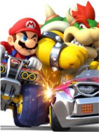

Summary
Complete! Mario and friends (and enemies) experience love, hate, and everything in between as they learn that sometimes the true villains aren't the ones fought in the games... See chapter one for updated news!!!!
Zoom! One racer used a mushroom to fly off a ramp, clear the one-thousand foot drop below, and land in third place. The racer in eighth was unfortunate enough to overshoot a tight curve. They flew off the track and Lakitu ‘fished’ them to safety. The first place racer used their Koopa Troopa shells to block the perfectly aimed red shell barrage from the disgruntled second place racer.
This was a Mario Kart race (-SPONSORED BY FUNGUS UP:: The drink that ‘springs up overnight!’), where Mario Mario, famed hero, and his diverse acquaintances routinely took it to the streets, dirt tracks, underwater, sand, snow, whatever Cheese Land is supposed to be, and anything else to win the gold. This particular race took place on the floating, ever dangerous Rainbow Road so calming music played, comets darted through the dark sky, and the nerves of ever racer were on edge. The usual.
“Mario, you’re an idiot..” King Bowser Koopa growled as he trailed a few yards behind Mario in his kart. His massive clawed hands gripped the steering wheel tighter.
Cool wind blew through Mario’s hair and mustache as he ignored his greatest rival, more concerned with holding the lead in the final lap. An item box gifted him a single banana, immediately deployed behind his kart as he saw Bowser approaching in his rear view.
“Caught up with ya, plumber boy!” Bowser said. The two where parallel, taking turns glaring at each other before bringing their attention back to the daring curves of Rainbow Road. “Just wait until I get a Super Leaf!” Bowser veered into Mario’s path, bumping the plumber almost off the edge. Mario did the same only to nudge Bowser about an inch.
“Gained some pounds?” Mario teased.
“Back at you, Red.”
“Well,” Mario continued, “you know that item’s only in Mario Kart 7, right?”
“Huh?”
“Yeah.”
“Which one is this?”
“Eight. I think?”
“...I knew that!”
Toad, the relatively young and new adviser to the Princess shrieked as a sudden burst of speed put him right behind hero and villain. Mario caught the entire thing in his rear view. Toad was completely engulfed by the shadow of a looming Thundercloud. Zap! In a blinding flash, Toad was shrunk, allowing Yoshi to take his place in third.
“Yoshi! Yoshi!” Yoshi said, speaking in his native tongue.
“Good riddance. These losers were starting to get too much narration,” Bowser said. “This is about OUR rivalry. Now watch this. I’ve done all of the calculations and this will hit you smack in that stupid plumber face!”
Bowser threw a green shell at a barrier with ‘FUNGUS UP’ on it. The shell ricocheted backwards and shot right past Bowser, narrowly missing.
Mario stifled a laugh. “Bowser? Er, what grades did you get in math again?”
Bowser’s vision went red until he took a deep breath. His new doctor had been getting on him about his blood pressure after all.
Meanwhile far up in the heavens, even farther than Rainbow Road, the Great Eldstar’s pager went off. This typically indicated that some lightning was needed somewhere on Earth. In fiddling with the pager, Eldstar dropped the star shard he was polishing and the priceless artifact made a loud clink on the marble floors of the Star Temple.
“Is everything fine?” Twink’s childlike voice echoed from across the hall.
“All is Fine,” Klevar spoke up from a pile of ancient books. “There is probably a Mario Kart occurring. Did you know that the thundercloud item has 7,000,000 bolts of electricity? I read it right here...”
The Great Eldstar finally read the message from the pager to see that Klevar was correct. Eldstar’s powers weren’t really for amusement and fake gold trophies, but he did it anyway. The pushover...
...Back on earth:
Bowser was so upset he was lost for words when he spun out on a measly banana. In a matter of a few minutes the competition got fierce with the twelve racers, Mario, Luigi, Yoshi, Peach, Daisy, Toad, Bowser, Donkey Kong, Koopa, Toadette, Junior, and Birdo being in one massive group. Mario collided with a fake item box and surrendered first place. He felt the prize slipped out of his hands until-
ZAP! Everyone except for Donkey Kong in 12th place were reduced to wimpy toy sized karts. It happened so suddenly that there was mass confusion. Koopa, Toadette, and Birdo fell off the edge. Junior, Daisy and Peach collided with loose items already on the track. Yoshi, that crazy dinosaur, didn’t care and drove merrily as ever in fun-size. Toad’s brain was already kind of fried from the previous thunder strike so he was fine. Maybe.
Donkey Kong silently thanked the Crystal Coconut for whatever had just happened. He barged through everyone and was about to get first.
“Not so fast, monkey breath!” Bowser threw a banana ahead of himself which bounced off of a ‘LICHEN COLA’ barrier and straight into Donkey Kong’s face. The blinded ape veered to the side and rammed into the a barrier, spinning out.
Mario pushed the pedal to the metal at the opening for first. Bowser saw this and slammed the gas as well. The finish line was only a few meters away and the two gunned it past all remaining racers. Both hero and villain crossed the line in miniature form.
All twelve racers eagerly gathered around in the Mario Kart Lobby, a garage like area, to see their final score. The top three placements were permitted access to the ‘VIP’ lounge, often called the ‘winner’s circle’. The normal lobby, ‘loser’s circle’, was for everyone else.
“Dfkd s flksdj f lksdfe wr!” Toad said to everyone who was getting restless.
Everyone stared back at the castle adviser until Lakitu behind a laptop cleared his throat loudly.
“Okay, I finally got this blasted thing to work. Third place.. Yoshi. Yay...”
“Yoshi!” Yoshi did a ‘flutter jump’ as he accepted his bronze trophy. He strolled right through the glass doors to the VIP area which housed drink machines full of popular sodas, a large couch, and a big TV showing replays.
Lakitu continued unceremoniously. “Second… Toad.”
Toad spun in circles, bowed, and then said, “Asdkfjsdl lksdrlfk slkfsdl sldkfjsdl kdk!” He took his silver trophy and did back flips to the winner’s circle. No one questioned anything..
Lakitu squinted oddly at the final result on screen.
“WHO WON ALREADY?!?” several racers shouted.
Lakitu rolled his eyes. “I’ve never seen this before but I don’t really care. First place in the cup with the highest score is….Mario-”
Mario jumped in the air in triumph.
“-and Bowser with a score of fifty points. The rest of you? You lose, go home!”
Mario landed on the ground wide eyed as everyone else dispersed, skipping the losers circle to visit their own comfy houses where they wouldn’t be so harshly judged for their placement in a sport that Mario only came up with based on his brief experiences as a taxi driver. Lakitu shoved the fake gold trophy in Mario hand and then left, muttering something about needed vacation time.
“Yeah! Got ya Red!...” Bowser waved a claw in front of Mario’s face. “...Moron, hello? I know I’m awesome but you can stop drooling..”
Mario snapped out of it. “How could we tie? Eh, never mind. You’re going to call me for ‘round two’, right?”
“Well OF COURSE. You’d better be in top shape tomorrow.”
Mario raised one eyebrow. “What do you mean?”
Bowser flashed his sharp teeth in an expression that could vaguely be described as a smile.“Oh you forgot? The tennis match’s tomorrow and I changed the line up posted. You’re now my partner!”
Mario looked at him like he was crazy. “You did?! So what happened to Luigi’s name then?”
“He’ll survive on the bleachers. As pesky and infuriating as you are, you’re still one of the best players.” Bowser chuckled. “I’m not gonna shackle myself to any of these other losers ‘round here!”
“Wow,” Mario mouthed silently with his head titled up as he questioned the stars as to how much more messed up the day could be, only he heard the low drone of something above.
“Uh, that sounds like my ride getting close.” Bowser looked around. “I'm getting a drink, want something?"
"I’m on a diet.”
“Sure.” Bowser stared at Mario’s gut briefly. “Since one of us here are comfortable with our bodies, spare me a few coins. A want a Morel Moxie and I left my wallet in my other shell.”
Mario dug in his pocket to see what he had. “If I give you the dumb coins, will you leave me alone?”
Bowser flashed him that ‘grin’ again. “I’m the one stuck here waiting here for my ride. You could have left anytime, but I know, I’m irresistible. Ha! Why don’t you tell the princess that too sometime?”
Mario slapped the coins in Bowser’s hand then slapped his own face.
The rest of the day moved on like the constantly shifting scenes of a stage play. That night, Mario lie in bed mildly bothered as he was reminded yet again that all excitement in his life was often tied to Bowser. What did that mean, he wondered as he dimmed the lights, Luigi long asleep in his own bunk across the bedroom. Mario was in contact with Bowser as much as, well, all of his other friends. Their intense and competitive interactions were becoming a sport in itself. Bowser was certainly an enemy, no one who cost so much trouble could be anything but, but he was almost a friend. A friend you dislike. Mario could get used to that. Maybe forever even...
Author note: All sodas are from Nintendo Adventure Book #12: Brain Drain.
The first of season one’s revamps. I’m going to make it a lot less slower than before, and tread less familiar ground so it’s a better experience whether or not you read the original.
(Archived) Original summary: The friendly (and not so friendly) rivalry never ends between Mario and Bowser. Reimagining of Frenemies Forever. Shorter. Sweeter. New adventure. New surprises. How far will they go? And yes, they will go farther than before. Genres: Friendship/ Adventure
Originally
Completed: 3/13/18
Edited: 6/21/18
Revamped: 8/9/18
Chapter Summary
Newly rewritten and improved. Enjoy.
Chapter Notes
Combined chapters?! See bottom notes.
Disclaimer: Mario and co. belong to Nintendo
It was a normal early morning at the Mario residence. Luigi’s heavy eyes blinked a few times as he leaned up and bed and stretched, Mario snoring loudly in the background. Luigi glanced towards his older brother and then the clock. 6 AM.
Luigi threw his pillow at Mario. “Bro!”
Mario tossed and turned but the earth rumbling snoring continued. Just before Luigi could head over to try something else, Mario’s cellphone vibrated on the nightstand.
Luigi saw the caller id. “Bowser?!”
“Wha- Bowser?” Mario repeated.
Pale faced, Luigi jumped on Mario’s bed and shook him violently. “Bro wakeup wakeup it’s Bowser calling!!”
“Ahhhhhh!” Mario screamed in return.
‘You have one new voicemail.’*Beep*
They froze as the voicemail began to play.
“Hey, pipes for brains, wake up call! Bwa ha ha!” The Mario brothers could hear a loud ‘Koopa Symphony’ in the background of Bowser’s voice. “Ah hem. But anyway, if we lose our match today, you’re toast! Oh and tell the Princess I’ll be looking my best today. Just for her!”
Mario couldn’t roll his eyes harder that comment. Luigi didn’t notice over the nervous clacking of his own teeth.
“Lastly. Umm, well. What’s the recipe for that Couples Cake again? You know, the one only friends eat together? *Mumbling noises were heard*- Kamek, no this isn’t Mario- *mumbling noises* Umm, gotta go. Keep that cellphone smokin’! Wait, that don’t make sense. Whatever. See ya, plumber breath.”
*Beep* ‘End of message. You have no new messages.
Mario was lamenting how how messed up this day could go until he noticed his brother. “...Weegee what’s wrong?”
Luigi was on his bed lying back. “Oh nothing,” he said quietly, “I probably wouldn’t have been a good partner for you anyway...”
Mario leap out of bed, white t-shirt, red boxers and all. “I didn’t know he did it until yesterday. I’m sorry...” Somehow he didn’t feel like that was quite enough, but there was no more to really say.
“No I really didn’t want to play tennis.” Luigi got up. “...Yeah. My tennis elbow has been acting up anyway.” He left the bedroom.
Mario thought of antics from last week. There was a plumbing mishap because the princess finally gave in to constant requests to have a soda machine installed in the castle, only it went south when the water lines weren’t up to snuff. The disaster nearly drowned them both and was ultimately patched up with duct tape and prayers that a leak wouldn’t spring up again, plus Luigi strain an arm holding a door full of water back so that five orphans visiting the castle could escape safely. (Those events were somehow related.)
Mario followed him out. “Little bro, I promise the won’t happen again.. Bros before koopas, right?”
Luigi turned around from the open fridge. “Fine. One question though. What did that Couples Cake taste like?”
“Bowser ate the whole thing on his own! So much for a dish that you can’t eat alone.”
Luigi laughed dryly. “That’s what you get for being friendly with a koopa! Try a Trial Stew next time!”
Luigi collapsed at the kitchen table’s chair already sleepy again. Mario however had the special ability wake up at 100%, so he rumbled through the cabinets for cooking pans. Cooking was always his thing, and with the eventual smell of pancakes in the air, Luigi found it hard to stay too upset at the red plumber.
“You’re just spectating??” Toad asked with some worry.
The twitchy subordinate of the Princess ran a concession stand in front of the tennis stadium. At 8 AM in the morning, this was a bright sunny day in Toad Town with crowds already starting to gather for the tournament. Toad wasn’t the only booth around selling useless junk, but he knew his booth stood out. The tip jar half full of shiny coins testified to that fact.
“You heard me right. Do you have a chill? You’ve been jittery since yesterday.”
“I’m perfectly fine. Want to try a shroom shake?” Toad picked up a pitcher full of something blue.
“What flavor is that?”
“My favorite, homeboy. Purple flavor.”
“But that’s blue.”
Toad put a hand on his hip. “Listen, I’m letting you try one on the house so take it you pathetic butt munch player two option!”
“Okay okay! I’ll try it!” With a sales pitch like that, how could he refuse?
Luigi took a sip, tasting a flavor explosion of banana, melon, and peach. It almost toppled the addictively acidic taste of a Lichen Cola. Almost.
“Did you like it?”
Luigi did a thumbs up when Mario came walking by waving.
Luigi waved back as Yoshi joined them, just getting off of the phone.
“What’s up my homeboy!” Toad replied through a megaphone.
Luigi covered his ears. “Oww!”
“What are you selling?!” Yoshi asked.
“Homemade shroom shakes. End the domination of the soda companies.”
“Birdo and I was just talking about their business practices, especially FungusUp. We found out how little they pay the Dinosaur Land immigrants in their factories. Anyway, I’ll pass for now because honestly I don’t trust anything you make, but you’re fighting a good fight.” Yoshi dropped a few coins in the tip jar anyway.
“Thanks, you stupid horse!”
“Hey!” Yoshi kicked boxed Toad backwards, sending him flying into the bushes behind his stand.
“Sorry, my foot slipped,” Yoshi said with a chuckle. “I’ll see you two in the stadium, bye.”
“Ha ha! Good one, homeboy!” Toad said from somewhere under the foliage.
All of a sudden, Luigi felt the need to get the heck out of there, dealing with two crazies. He made way for the entrance where there were various Mushroom Kingdom citizens moping around before the game started. Luigi got in the long line to enter the stadium. Luigi tapped his foot while he checked his watch, a gift from his grandfather Pablo Pizzacaso. It was old and the crystal was cracked, but it never lost a minute. He peered way ahead to see that the line was actually for a popcorn station! With his palm hitting his face, Luigi almost walked off before noticing the person a head of him for the first time.
“Hey, Boo. I haven’t seen you since Mario Party… whatever number we’re on. Do you still play tennis with that mean curve?”
Boo turned around and blushed under his gaze.“Sometimes, hehe. Do you know someone’s been defacing your posters?” They pulled out a poster that had ‘Mario and Luigi vs Toad and Daisy’ on it, only someone had marked through Luigi’s face with a red X mark.
Luigi sighed. “It’s true. I’m out of the game.”
“Oh no!!” Boo ripped off the white shirt they suddenly wore to reveal a green shirt underneath with Luigi’s face on it. “I’m your biggest fan, Booigi the Second! Who’s partnering with your brother then??” Boo asked urgently, like the wrong answer might rock their world.
So Luigi gave the mathematician’s answer. “Mario will be working with his greatest and most feared friend and enemy, Bowser!”
At Bowser’s Castle
Ludwig Von Koopa, fresh out of bed with his loose fitting robe and all, stood with his ear to the door as ‘Reprisal in A minor’ played from the auditorium within. He’d forgotten the mental state he was in when he wrote the ten minute classical piece a month ago, one of business and near burn out, so that such a turbulent six stanza piece was an outlet. He felt so great after composing it, but now that feeling of hanging on by a thread was back. He-
“Hey, Luddy-sama. I was thinking of something that could end world hunger-”
Ludwig whipped around with fiery eyes. “Do you not see me meditating on peaceful music?!?”
Iggy made a face. “Gosh, okay. I’ll scrap that idea forever then...pfft.”
Visiting the depths of his inner psyche, something was clouded and permeated by intense anger of an unknown source-
“Prince Ludwig, in the kitchen there’s-”
“Kamek,” Ludwig said dangerously. “I am thinking right now. Do not disturb me.”
Kamek shrugged. “Fine. I’ll give your portion of Koopasta to the dog again...”
But where these feelings his? They had to have been. What was already accomplished would lead to what was always the end goal, so why did this plan feel so alien? The music stopped and Lemmy slammed open the door, smacking Ludwig in the face.
“Sorry, Luddy. I didn’t see you there.”
Ludwig held his face. “What happened?” he groaned.
Lemmy continued to juggle five bowling pins. “The radio switched to a song I didn’t like. It’s all yours.”
Ludwig rushed in where the auditorium was empty save for the portable radio setting on the stage where Lemmy was just doing his early morning practicing. Ludwig pulled himself together and remembered what he needed to do for the plan, tune in to WMUSH. If his calculations were correct, the rest of the day would come together as well.
Bowser threw another dart at Mario. The metal tipped barb dug in an inch deep, straight in Mario's nose. Crudely taped to a wall in the men’s locker room was a tattered 36x24 poster of Mario doing a 'v' sign, speckled with innumerable tiny holes.
“Aww, you own posters of me!” Mario said sweetly. He noticed that Bowser’s red hair was gelled back and he had a kind of sweet smell.
“Yes, AND?!” Bowser retorted. “These are for ‘motivation’ to wipe the floor with you in real life. Oh, and nice for you to finally show up, fuzz face. The game is only ten minutes from now.”
Mario opened his mouth to give a sharp reply but then closed it. Bowser was correct. After saying his goodbyes to his friends outside the courtyard, Mario wandered on way of the locker rooms. First a young reporter from the Mushroom Press flagged him down for an interview and he was too nice to shoo them away. Then he ran across someone selling hot dogs inside of the stadium. His stomach refused to let him walk past empty handed. Lastly, Princess Peach was setting around in the chair umpire area and he had a friendly talk with her. As Mario was never one to wear a watch, he’d lost track of time and became ‘fashionably late’. -If one considers a plumber getup fashionable that is; Bowser would certainly disagree..
Mario began to pace. “What’s our game plan?”
“Stay out of my way so I don’t destroy you and let me hit the ball all of the time.”
“Good plan. One problem. That’s not how tennis works at all.” Mario frowned.
Bowser crossed his arms. “Well, at least I’m ready to play. Where’s your racket?”
Mario rolled his eyes as he dug into his duffle bag. Out from it came his signature 'M' tennis racket in well used condition. His fireball power shots had taken a toll with black burn marks turning the whole thing several shades darker than the blue color it originally was. Mario immediately heard laughter from the koopa king.
“You’re playing with THAT, Man in Red?”
Mario swung in the air a few times, testing his grip. “Why not? Also, going a bit soft with the insults are we?”
“Plumber, the only thing soft is that crappy tennis racket. Do you really want to fail me?!”
“You make it sound like we’ve been assigned a high-school project together.”
“Shut up. Point is, it’s toast. Literally!”
Mario noticed some black crumbly bits stuck to his glove but he wasn’t about to admit that Bowser was right again. Hiding it behind his back, he said, “Either way, I can carry myself in the game. I’d be more worried about your speed problems.”
Before Bowser could respond, the doors of the locker room swung wide open, letting the blinding light of outdoors bleed in.
"Just checking in on my homeboys! LET'S HAVE A GREAT GAME!" Toad screamed into that megaphone again. He was standing in the door.
“Oh it’s just Fungusface,” Bowser said under his breath, “Didn’t we have this talk before with extra characters?”
“Hey, I have that poster,” Toad said. “I see I’m not the only enemy and fan!”
“Back off mushroom!” Bowser said dangerously. Mario nodded in acquiescence, but he did wonder what Toad meant by enemy and fan. Since when was Toad an enemy?
-Flash back-
Small Mario and Tanooki Toad were at the end of a stage in Mario 3D World. The timer was about to run down in five seconds.
“Oh no, we’re not going to make it! Jump!” Mario said to Toad. They climbed the staircase to the top of the flag pole.
“Okay, homeboy!” Toad proceed to jump on top of Mario’s head and get a boost to the top where he earned a 1-Up. Mario on the other hand, got launched smack into the ground where the timer hit zero and he died.
Oh, yeah then...
“Gotya buddies! Toad OUT!” Toad said in the megaphone again, snapping Mario out of it. Bowser’s hands shot up to cover his ears at the offending noise, bumping Mario and making him drop the racket that was still behind his back.
CRACK!
The brittle and battle worn racket lay on the floor, broken in half. The racket that had lasted every Mario Tennis game until now was gone.
"OH NO!" Mario dropped to the floor to pick up the pieces. Each piece he grabbed shattered into another.
Bowser got something from his own duffle bag. “Stop crying, idiot. You can’t be my partner without a racket so I’m gonna be nice just this one time. Here!”
He gave Mario a heavy green tennis racket, which otherwise resembled Bowser’s purple one, down to the menacing Bowser emblem on it.
“Umm. Thanks..I think?” Mario swung this one in the air, only to find the entire balance of it different.
“Hmm. Yeah, try not to fall on your face, hear? It’s game time.”
Mario gasped as he saw the clock. It was now or never, partnered with Bowser or not.
Toad entered the locker room to find Daisy sitting on the benches and playing an action packed game on her phone. The Sarasaland princess had on an orange tank-top and shorts and her hair was tied back with a hair band.
“What’s up Daisy?” Toad greeted as he entered.
Daisy continued to stab at the touchscreen. “Just remember the plan we discussed over the phone.”
“Are you alright?”
Daisy shot up from her seat. “You think?!”
“Umm… no or I wouldn’t be asking you?”
She put the phone down and walked around in circles. “Forget it. I’d better live it up while this game lasts. I mean, there’s no telling when I’ll get to hang around ya’ll again.”
Then it hit Toad what she meant. “Homegirl, don’t be like that. Our roles change up all the time and not all of us are A-list, but that doesn’t mean any of us are forgotten.”
Daisy stopped. “You mean that?”
“Of course. Listen, I’m a guy named after my species. Most people don’t know if I’m one person, or two people, or clones of each other or what. By the way, the answer is all of the above. But still, people know who I am. There’s tons of Daisy fans out there considering there’s just one of you.”
Daisy smiled with her eyes to the ground. “Thanks for that, Toad. … I can see why they made you the new Castle Adviser.”
Toad blushed. “Just doing what a Toad’s gotta do-”
There was a soft knock on the door.
"I'll get it," Toad said. He opened the door to find a delivery guy.
“Gift from a fan,” the dark boo with a ball cap covering his face said in a low snarky tone.
Toad received a brown paper bag and the door was closed before Daisy caught up. Inside were two personalized Fungus Up 12oz cans with ‘Toad’ and ‘Daisy’ inscribed on them, usually only available in lavish locations like Poshley Heights.
“Wow, I’ll take that, thank you!” Daisy popped open hers and gulped it down, feeling that the castle adviser’s words were prophetic somehow.
Toad popped open his. “I feel kind of hypocritical considering what I was just selling outside of the stadium but… Oh well!” He gulped it down, begrudgingly noting that the lemon lime taste of Fungus Up was decent even with the can tasting slightly flat.
"YEEEAAAHHH DAISY!" She did a triple back flip which resulted in her hair band falling off. She then shook her hair loose and let it lay on her shoulders.
“Nice!! Need this?” Toad picked up the hair band.
“Keep it. It’s game time!”
“I’ll wear it then to symbolize that we’re in sync and stuff now.” Toad put the flower emblem accessory on like a sweat band.
A modest sized crowd gathered in the all purpose outdoor stadium, intended to host small sports events in Toad Town. The crowd took to like, split down the sides. The right had lots of toads, bob-omb buddies, nokis, piantas, and other friendly species. On the left however were koopa troop soldiers, bandits, mean looking thwomps, and other enemies who had caught on that Bowser would be playing.
Members of the audience could hardly contain their excitement as Mario and Bowser left the locker rooms and entered the field. Bowser waved at Peach who as in the empire chair, but she sort of winkled her nose at him and turned away. Bowser growled, especially when the right side of the crowd began to laugh.
"Ladies and gentlemen...and Bowser!" Lakitu and Bowser exchanged nasty looks. “In this doubles match we have Mario and Bowser-”
The crowds on both sides cheered wildly.
“-vs Princess Daisy and Toad!”
Crickets chirped.
“That’s not nice,” Mario whispered to Bowser.
“Serves em right. Dumb secondary characters...”
Toad and Daisy entered the tennis court and got into position. Toad and Bowser were hugging the net and Daisy and Mario farther back. Daisy looked normal if slightly disheveled, while Toad was wearing a flowery band on his head. Both he and she twitched, not unheard of from Toad considering how often he got electrocuted, but very odd for the princess. Even odder, Mario thought, was the slight foaming at the mouth.
Thwak!
A tennis ball hit Mario flat in the face, jolting him from his thoughts. Laughter could be heard from the crowd.
“Mario?! I was joking about using your head as a racket. Wake up!!” Bowser growled.
“For the LAST time, first serve Mario!” Lakitu said. Mario could have sworn it was never said a first time.
Mario picked the ball up. Grievances aside, it was show time.
To be continued…
“Author note: Get Ready To Rumble! Next chapter at least.” -taken from Mario and Bowser: Frenemies Forever Chapter 3
**Reference from Mario and Bowser: Frenemies Forever Chapter 26
Bros
before koopas originally created: 3/13/18, - 3/16
Even power
shots won’t save you: 3/15/18, 3/18, 3/25
Merge and
Revamp: 8/9/18
Chapter Notes
Merge of the old chapter 4 and 5. See bottom notes. Mario and co belong to Nintendo
Luigi settled in the nosebleed section, where he liked it. The hike there wasn’t fun, but there was always room for personal space with everyone else seated so high up also doing so for similar introverted reasons. The first thing Luigi noticed was Mario with a Bowser racket!
“Hey, that’s not right!” Luigi shout in protest. No one heard him because he was about a mile away from the field however.
“I know right?”
Luigi turned to see the Boo from before beside him. “Hey, I didn’t even notice you there. Why are you up here?”
“Because I’m… a loser?”
Luigi smiled. “Me too!”
The crowd around them cut the conversation short with roaring laughter.
Luigi turned back to the game. “What happened??”
Boo covered their eyes. “Oh no! I think the umpire hit Mario with a ball, hehe! Uh, you know I’m not actually laughing about that right?”
Mario swung towards Toad who had no issue returning the ball. Bowser intercepted at the net and smacked the ball hard in Daisy’s direction. It was almost past Daisy when she did a backflip into the ball’s path and hit it backhand. The ball flew straight between the gap of Mario and Bowser.
“Love-15.” Lakitu announced.
Mario was left scratching his head at that one.
“Don’t know either, plumber boy. Let’s just win.”
Mario served again towards Toad who curved the ball around Bowser at the net. Mario sliced the ball in front of Daisy. She delivered a nasty topspin straight down the line. Bowser did a mad dash towards center and returned it, so hard it went out of bounds.
“Out. Love-30!”
Mario pat Bowser on his spiky back. “Way to go,” he said sarcastically. “...Ouch! Why did I do that?” His hand was almost bleeding.
“Shut up!”
Mario hit lightly towards Daisy. She shot back towards Mario who returned it center. Toad sprung ahead in lightning speed and then the ball was flying back to Mario before he could prepare. He was hit in the face once more.
“Game point!”
Bowser guffawed. “… Oh wait. We’re losing aren’t we?”
Mario was now extra careful, never aiming towards either Toad or Daisy directly and letting Bowser get aggressive up front. After several volleys Bowser did a power shot sending the ball like a bullet bill (literally) past Daisy. She did a last ditch backflip and lobbed the ball in the air, far enough to make a tiny shadow on the ground.
Bowser followed the shadow. “I got it! I got it!”
“No, I’m standing under it!”
Bowser pushed Mario aside. “You’ll screw it up, stupid. Move!”
Mario shoved back. “You move!”
“No! YOU!”
The crowd went wild at what would be a pathetically easy shot and start of a comeback.
Toad was leaning against the net speaking gibberish and Daisy was standing on her head for no reason. Both of those things were so strange that Mario and Bowser let the ball bounce right between them. Both realizing their error at the exact same time, they swung. Thwack!
Bowser held his snout. “OWW YOU IDIOT PLUMBER!!!”
Mario covered his face with both hands. “IS IT BROKEN? I CAN’T TELL!”
“Uncover it.”
Mario did. “Okay.”
Bowser leaned up close, enough to make the plumber feel awkward. Mario still had that round face, large nose, and thick mustache. Bowser smiled. “Yep, still ugly.”
“Game, Daisy and Toad,” Lakitu announced. He ducked as Bowser affiliated crowd goers threw bags of popcorn at him. Peach was silently glad she was on the right side of the court in her umpire char.
Mario hung his head in shame, but there was more. Daisy was now spinning on her head like a break dance move, only she spun faster and faster. Toad stood in one place shaking violently while spilling unintelligible words. Before Mario could walk over there to figure out what was going on, Bowser pulled him aside.
“Where do you think you’re going??”
Peach stepped up. “Oh my! Call the medics.”
“Just in time because I quit!” Lakitu fled as medics flooded the field. Some attended to Daisy who collapsed like a spin-top that's run out of steam and others attempted to stabilize Toad.
“We need space people!” shout one magikoopa nurse.
“Could have used a pause there,” remarked his Kong ER assistant. Just then however, they spotted Tatanga the Space Alien in the crowds, so they began to pack up and evacuate Toad and Daisy out of the tennis court.
“How dare they!”
Mario moved away from Bowser. “Because they totally chose to have a medical emergency right now in a game they were easily winning.”
“Maybe! It could be a gambit.”
“Do you even know what that means??”
Bowser shoved Mario back while smoke threatened to pour from his nostrils. “Yes. They get the game canceled so that they can do something sneaky. Just because I go easy on ya half the time don’t mean I’m stupid.”
Mario picked himself up from the ground with a grunt and joined where Peach was without a word. Bowser sighed as well and stood back, waiting impatiently with his arms crossed.
Luigi covered his ears. “Normally it’s quiet up here.”
Then Mario and Bowser lost the first set. Crowds stood up and blocked the view of what was happening for a moment. When they started to take their seats, Luigi saw medics on the field! Just when he thought he’d imagined it, the crowd got excited again and Luigi’s view was completely blocked by a Whomp in front of him.
“What the-?”
“We’d better go, hehe.. Getting bad vibes.”
Luigi nodded. Already some fights were going on down low. “I agree, but how do we get out of here quick?”
Boo took his hand. Luigi’s vision went dark for a second or two then he was right outside the mostly vacant courtyard standing on the ground.
Luigi looked around astonishingly. “Whoa, what happened?”
“We just phased through the building to come outside.”
“Thanks, buddy! Umm, we can let go now.”
Boo let go, blushing. “Sorry, hehe. What do you think happened?”
Luigi flagged down a pianta who was leaving the stadium and asked what was going on.
“The game is canceled, man,” the pianta said in thick island accent. “They just fell out!” The pianta ran off.
“Mario works with Bowser and then this? What should we do?”
“I got it! Go home and hide under the covers!” Boo’s invisible legs scrambled in place underneath them to run off like in a cartoon.
“Wait!”
Boo turned around with a screeching tire sound effect.
“Don’t you want to work with me? I was going to try to beat the crowd to the hospital since I know that’s where Mario’s going to be.”
Boo gasped and held the sides of their face. “Y-you really want to work with me??”
“Yeah. Remember when we were the ‘Scare Pair’ in Mario Party 6? Instead of collecting stars let’s collect bad guys who are behind.. when tennis matches go bad… or something! Deal?”
Luigi and Boo’s hands joined to from the official handshake of the bestest unlikeliest friendship.
With Toad and Daisy getting escorted out, the game was now definitively over. Peach told Mario that they would be taken to Mushroom Kingdom Hospital East, her very own sanctioned hospital. Soon after, little fights were occurring in the stands and Mario heard Peach call for some security to show as well. There was one problem, he and his brother arrived on their mach bike, but if he took it now to go to the hospital, he’d be stranding his brother at the stadium. Mario dug in his pockets and they were empty.
“Mario, I’m here for you. I have enough for the bus, so let’s go.”
Mario turned around to see his dinosaur friend who seemed to know him better than he knew himself at times. “Thanks Yoshi.”
They made way for the exit. “Don’t mention it. I’m sure one of these days I’ll be repaid for how I’m constantly transporting you somewhere...”
Mario chuckled. “I’ll buy you lunch. Are we even now?”
“What about me??” Bowser said, blocking the way out.
Yoshi eyed him oddly. “Depends. What do you eat? Chinese? Greek?”
Bowser frowned. “What are you talking about? Are you guys leaving??”
“We’re heading to the hospital, so you’re free to do whatever koopa stuff you need to do today.”
Bowser scoffed at Mario. “So ya just write me off? Wow!”
“I didn’t think you were the clingy type.”
Bowser for a brief moment tensed up in anger but then revealed in his hands two crumpled cans of Fungus Up with ‘Toad’ and ‘Daisy’ on them. Mario and Yoshi stared stupidly.
“This is why I’m wasting my time with you morons. I got bored and noticed that their locker room door was wide open with these laying around. Kinda weird, right? But whatever, smell ya later. Same for you, dinosaur breath.”
Sometimes in dreams Mario went back to that time when the Mushroom Kingdom felt like an alien environment. They hadn’t devoloped mass transport, cellphones, or internet when he first got whizzed away to this strange new world. What also seemed so much more simpler were his hero duties and relationships with friends and foes. Was it now okay to speak with your arch-nemesis semi regularly on the phone?
“As long as you don’t let him get into your head, it’s never bad to be in the know of whatever the koopas are doing.”
Traveling down Starman Street was a Mushroom Bus packed like sardines.
Mario blinked a few times. “How did you-?!”
“Quit acting like I haven’t known you since you were in diapers. You just had that look like you were thinking about whether or not it’s appropriate to talk to Bowser every other day.”
Mario would have broke into applause where his arms not sandwiched to his sides. “Could you scoot over some?”
Yoshi inched over the one inch he could scoot before he himself became pressed against another bus rider, specifically a giant shy guy. Just then the bus hit the millionth pot hole that jolted everyone inside.
“You always were rough transport,” Mario jest.
Yoshi rolled his eyes. “Don’t carpool with your brother next time... What do you think Bowser was mouthing off about?”
“I don’t know. Some how I just woke up and knew it would be a weird day...”
The bus arrived at Mushroom Kingdom Hospital East, a flat roofed three story building made of stone and marble. Mario checked his phone to see that Luigi hadn’t replied, but with how their YoshiMoble economy plan was, that was typical. He was sure his twin would show up eventually. He and Yoshi went inside the hospital to find the waiting room already full of people.
Mario greeted the Toad receptionist, a head nurse named ‘Nass T.’ Her eyes were glued to charts on a computer and hand to a mouse that clicked and darted around the mouse pad frequently.
“Are you ill, or do you know someone?” she asked curtly.
“Hey, this is Mario you’re speaking to!” said Yoshi.
She pried her eyes away at the mention of Mario’s name, and the fact that her mouse was mysteriously disconnected from the back of the computer.
Yoshi dropped the mouse cord. “Sorry. It slipped. That just keeps happening today.”
“Your people are in Room 444. Have a nice day!” Nass said, like that was a threat.
Luigi and Boo drove on the mach bike. It had a compartment on the side for passengers that Luigi typically occupied, but now he was the driver and he finally knew what it was like to be free and wild, while driving cautiously at the speed limit of course.
“Yeah, so one time some bullies beat me up other there!” Boo pointed to an item shop.
Luigi turned his head. “Isn’t that the ‘Toddlers-R-Us’?”
Boo was hesitant for a moment. “...Yeah?”
Luigi nodded. “Oh, me too! Toddlers can be fierce, especially pretty much all of them!”
They stopped at the Mushroom Press, a small building that provided offices for many local reporters and journalists with a light duty printing press in the back.
“Let me speak to someone in here, then it’s to the hospital.” Luigi took off his helmet to find Boo shaking in the passenger cart.
“C-can I wait outside?”
“It’s not loud or annoying in here, you know.”
“-Can I just stay out here? Please??”
He walked in alone. The entire floor was open and plain with office cubicles forming little rooms and hallways.
“May I help you?” the desk clerk asked.
“Yes ma’am. Is Kylie Koopa in? She’s a friend of Mario-”
“Right here!” A female koopa with a pink shell and green hat stumbled out of a nearby cubicle, sending paper everywhere. Others around her eyed her exasperatedly. “You gotta ‘scoop’ for me?!”
Luigi explained what happened during the game. “And so, yeah. I just thought you’d find it interesting, that is, if you don’t have other big cases you’re looking into.”
“I was only researching why peanut butter and toe jam sandwiches tasted so good, but that don’t compare to this!” Kylie snapped a picture of him before he could react. The photo that came of out the Polaroid was beautiful, blank look, wrinkled clothes, and hairs coming out of his nose and all. “I can’t believe it all went south. Susie Que over there interviewed Mario before the game.” Kylie pointed out a dark boo wearing a wig who was seated down the hall.
Luigi checked his phone after it made a Flamenco music sound. “Oh, that’s Mario’s text that he probably sent forever ago but it’s just getting through. I have to go.”
Kylie did her signature thumb gesture. “Contact you soon, k?”
“Thanks again, and let me help you with this-” Luigi reached down for some of the papers.
“NO!!” Kylie dove down and snatched them up while curiously keeping an eye on a green capped Toad who’s cubicle was across from hers. “I mean, thanks Green but I got it!”
Mario knocked on room 444 before stepping in.
“Visiting hours are- Mario!?”
Toad and Daisy were unconsciously laying on some cots in the room, with Peach sitting on a chair with tears in her eyes.
The doctor stopped stooping over where Toad and Daisy were. “I-I am Doctor Professor Koopa and s-so-”
Yoshi gave him a once over. He was short, shaky, and seemed more like a creeper play dressing as a doctor than a genuine medical practitioner. “Excuse me. Who again?”
“Y-you haven’t heard of me?”
“Of course they have not,” Peach said.
Mario took off his cap. “These guys are tough, Princess. They’ll pull through.”
“I agree,” Yoshi said. Meanwhile, Doctor Professor Koopa slipped out of the room.
Peach stood up. “But others have been getting sick like this all morning and no one knows why!”
“Maybe they got too hyped up over yesterday’s Mario Kart? Maybe a stomach bug is around? Coincidence?”
Yoshi sat next to the window. “What he said.”
Mario went over to their beds and watched them sleep. “We just can’t speculate on the others, but we know that these two both had personalized soda.”
“Wonderful observation. How do you know?” Peach asked, with some color returning to her face.
“Bowser.”
The color promptly went away as she stared at Mario like he’d grown another head.
“-Excuse us Princess.” Yoshi led Mario out of the room. “You know I love you Mario, but what the heck?” he said quietly.
“But it’s true. You were there.”
Yoshi sighed.
Mario point his finger at him. “Hey, I’m just trying to help. That’s literally our only clue.
Yoshi shoved his hand away. “But we don’t really know that they drank the soda right then or at all. And isn’t it kind of interesting that Bowser would care enough to make a big deal of-”
Yoshi stopped talking when he saw Luigi approaching from down the hall with a Boo following his heels.
“Hey bro, I got your text but there was uh, traffic. Also I brought along Boo. What’s going on?”
Mario motioned towards room. They went in while Mario and Yoshi waited outside for a moment, neither speaking to one another because they assumed the other was upset at them, when in reality they weren’t. So their uncomfortable silence was suddenly interrupt by commotion happening down the hall, complete with a familiar deep voice shouting.
“You’re a quack anyway, out here hiding under that ridiculously fake name!”
“I-I’m calling security!” Doctor Professor Koopa squeak, backed up against the wall.
“Save it. All I wanted to know was if it was non-serious so I could win my tennis match soon. You do your thing with the Mario idiots. In fact, look at what the Cat Goomba dragged in!”
Bowser turned to face Mario, all frozen in shock. Bowser flashed that ‘grin’ Mario was starting to see a lot lately.
“Fancy seeing you here, plumber! Bwa ha ha!”
To be continued…
Author notes:
References:
-Mario
patting Bowser on the back was a soft reference to the first chapter
Mario and Bowser: Frenemies Forever, notable because that gag didn’t
return in this remake, so I put a nod to it here.
-Luigi
mentioning ‘Scare Pair’ is from Frenemies Forever
Chapter 4
-“Give us space people!” was a direct
quote from Frenemies Forever Chapter 4, but the joke after that is a
meta reference to a review Magikoopa981 left.
Wipe Out!
created: 3/18/18, 3/19, 3/23
Secrets created: 3/19/18 - 3/22,
3/24, 4/4
Revamped: 8/10/18
Chapter Summary
Newly rewritten. Yes, it get's stranger.
Somewhere in the outskirts of Toad Town was a rusty trailer in an open dirt field with a large work van parked to the side. On the trailer was ‘M.K.D.C.U OFFICE’ painted in a colorful psychedelic font. Inside, a goomba dropped his MGM Grand Casino cards on the table, in front of the snifit and paratroopa who sat across from him.
“I declare war," Richard Goomba the mega goomba said. He had a short black goatee and wore a camouflage colored jacket.
Sebastian Bullet dropped his. “Go-fish! Are we playing this right?” His red snifit robe was normal outside of several optimistic pins like one that said, ‘Drop 1-Ups, not Bob-ombs’.
“Who knows. My dad just gave me this deck of cards as a present from the Real World before my mother abandoned us forever. Billy, it's your go."
Parabilly Koopa was an older red shelled Paratroopa with a beat up straw hat on he’d owned since the dinosaurs roamed. He left his cards stacked face down as he continued to type on his laptop. "Skip me this turn. I’m still waitin’ for a dern reply from my folks."
“Instant messaging your cousins again?" Richard asked.
"No, my twin brother Probabilly. He can never decide what to send.” Billy’s computer made a ding noise. “...Well I’ll be darned. He finally sent me a coupon for half off an entree at Club Gamecube across from Club 64.”
“Gross. They don’t even have any vegan dishes. Make your move already.” A hand tapped Richard on the shoulder.
“I have completed the mural," the tall wiggler named Wiggletron Berry, spoke in monotone. “Would you like to see it?” He was outwardly nondescript aside from his thick prescription glasses and splotches of paint all over him.
"Sure, Wiggs. Beats these losers!"
"Hey!" Sebastian said. Parabilly typed away, ignoring the drama.
Gracing their old beat up work van was a freshly painted 'M.K.D.C.U.' like on the trailer. Each letter was a different color and the backdrop looked like a flowery explosion.
"Nice! You’re better than half of the hacks that call themselves graphic designers!” Richard turned back towards him. “I mean, your art is the only thing that lights this dump up, and I mean it! Jimmy’s been promising we’d get a real office for two months but look at where we still are.”
“Wow. Thank you,” Wiggs said, flushing.
Just then something small was kicking up dust in the air as it sped towards them, coming from the direction of the telegram office down the block. James collapsed before them gasping for air. ‘Jimmy’ was a plump and balding monty mole in a hazmat uniform. He was also the founder and leader of the ‘Mushroom Kingdom Disease Control Unit’.
“I *pant* got a *pant* urgent message. Youse won’t believe this!”
“Breathe, Jimmy!” Richard said, kicking him over.
“Should I initiate a health evaluation?” Wiggs said.
James continued to lay on his back. “No. I’m fine. Get the others and tell em we’re hitting the road!”
“Oh, uh, princess. They didn’t tell me you were in here. Are you okay?” Luigi strut across the room with his normal lanky gate and stood next to the princess, just close enough to be awkward.
Peach began to cheer up, finding him enduring anyway.
“Do not fuss over me. Daisy over there needs you.”
Luigi saw her and Toad lying in the cots like they were taking naps. There was no medical equipment attached to them bizarrely. Also, his companion had disappeared.
“Boo?”
Boo phased into existence, their visage tinted red. “I’m sorry. I got nervous when I saw her!”
Peach turned to Boo. “There is no need to fear. As long as you are not-“
They heard a crash outside the door. Luigi opened it and Yoshi was standing in the middle of the hall with his jaw dropped as Mario and Bowser brawled. Bowser shot his flames all around, burning the white interior walls black and forcing all doctors and nurses to stay back. Mario ran around behind him and picked him up by the tail, swinging him around and around. In the narrow hallway Bowser’s flailing body put gashes though the drywall with each revolution. Bowser reached terminal throwing velocity so Mario got ready to aim the Koopa King at a mine, except there wasn’t one, so the grey box on the wall marked ‘WARNING: DO NOT TOSS TURTLES AT THIS’ would do.
“So long-a Bowser!”
Time stopped as Bowser faced him down while hanging in mid air. “Wait, so that’s what you were saying the whole time?”
Mario only winked and did a v sign with his hands.
With a boom and a sizzle, Bowser’s massive body collided with the circuit panel and part of the wall fell with him. All the lights in the entire hospital dimmed and people all around screamed in terror.
Heart racing and very caught up in the excitement from the fight, Mario looked around shiftily in the darkness. “Oh no. This must be the underground level 1-2!”
“No, my dear Mario. You’ve already reached the castle!” Peach said, looking very disappointed.
Kylie Koopa stuck a push pin on another spot on the map of Toad Town. All pins were somewhere close to where the stadium of the tennis match was, verified by her fluency with a phone book. According to the dozen people she bothered by calling unexpectedly, their friends and family got sick this morning and were consistently being checked in at MK East Hospital. They refused interviews however, which bummed her out. Kylie wondered if Susie Que, the new guy, would want to come along, but they seemed a bit busy in their cubical. Maybe she’d help them spruce the place up some time, as it sparsely decorated with only a painting and the office computer.
A voice called Kylie from behind. She swiveled her chair around to face Mitch Toadstool, a green capped Toad dressed in an expensive suit.
“I need to speak to you, babe.”
Kylie frowned at him. “About what?”
Mitch leaned up. “That new guy down there-”
“Susie? Pffft. It takes real levels of douche to talk trash about someone who hasn’t even worked here for a day.” Kylie began to gather her things and walk away.
Mitch stood up as she did. “I don’t think you understand. Just be careful, okay? -And check your sources.”
“What’s this? Baby’s first book report?” She said over her shoulder. “Take your own advice, greeney.”
Mitch followed her all the way to the door heading out of the Mushroom Press. “Babe, you are such a stupid koopa. Listen just this once...”
Kylie closed the door in his face. What a creep, Kylie thought. He had been a lot nicer to her recently, but the ship of them reconciling has sailed far away, like to Rogueport or something.
“Oh, how wonderful,” Peach exclaimed.
She, Bowser and Mario stood outside the hospital as more of the sick with their relatives and friends poured in the main entrance. Other than that, it was as warm and sunny as it was for the tennis game.
Mario put his arm around Bowser’s back, avoiding the spikes. “Yes. Just one big misunderstanding, and not us trying to casually K.O. each other or something.”
Bowser smiled, baring huge fangs. “And I will never eat an entire couple’s cake again with out sharing it with my wonderful friend,” he said stiltedly.
“Teehee! It’s so adorable when you two get along!”
Mario and Bowser’s eyes met briefly with a knowing glance.
“-Now let me explain what I’ve recently been told. Doctor Professor is handling ‘Case X’, the code name for whatever Toad and Daisy are sick with.”
“Oh really? He used to be a professor in my castle and ran my science lab. Ya know, chemicals and experiments and other science stuff.” Bowser said. “He’s the reason why I could teleport in exactly that one game where I turned your castle into an art gallery.”
“Well when I was a little girl he was the head doctor in my castle. I remember him as a nice, if not shy man. He later quit and moved on. I don’t see the issue."
"Me neither,” Mario remarked. “What’s the food court serving?”
The smile dropped off of her face. “Nothing, because you cut the power and they had to delay the kitchen while waiting for the circuits to flip again. That reminds me, you two aren’t allowed to enter again.”
“What?!?” Mario gasped. Bowser began to walk away from them down the sidewalk. “Bowser, where are you going?”
Bowser yawned. "To grab a bite? Don’t worry, my wallet’s in my shell this time, moustache. Have fun.”
"Let him go," Peach said dryly. “And I’m sorry I had to escort you out. If I did not, the entire staff of the hospital was going to quit on the spot. I’ll keep you informed so take a rest in the mean time. You are looking rather stressed."
Mario stretched. “Your wish is my command.” So he head towards his favorite place.
Club 64 was one of the few clubs in Toad Town that was universally loved. It was old timey with its wooden floors and clay walls yet modern with the sports bar and television sets. Mario took the short walk to there from the hospital and ordered a small drink as he spotted his rival setting alone at a table.
Mario seated himself across from Bowser. “Hi.”
Bowser glanced up like he’d seen a Boo. “What.”
“Oh uh… nothing. I didn’t know you came here.”
Bowser slammed his empty coffee mug on the table and growled.
“Whoa, okay!” Mario got up from the bench seating.
“You want round two, huh?!” Bowser barked, seething with anger.
“I really don’t want to get banned here too, so no.”
Bowser let out the breath he was holding. “Me neither. This is the place I can get my black as tar coffee with a pinch of cocoa. Waiter!”
The waiter came by quaking in fear and refilled Bowser’s coffee, then ran away screaming. Mario guessed it was safe to set down again when he noticed Bowser was smiling at him.
"Oh nothing, just keep your face like that, plumber boy. Looking like a nervous wreck is a good look for you!"
Mario leaned one elbow on the table. “Something just seems off about this day.” He chugged down his Tasty Tonic.
“It does, I mean how could I be in a tennis match and not dominate?! Stupid kids drinking stupid sodas right before the game..."
Mario thought about something while watching out the window. People walked by on their business, unless of course they happened to notice Bowser, in which they freaked out. "You and I are the only ones that believe there’s anything to the soda stuff. I wish I could have informed someone who knew what they were doing."
"Then why don’t you?" Bowser slid aside the slightly cracked coffee cup and left a one coin tip. He got up from the bench.
"Are you thinking what I’m thinking?”
"It’s room 444, right? I don’t care about your flower chick and fungusface, but they need to be well enough for our tennis rematch. That’s right, Bowser’s coming to town, er, hospital. What are you waiting for?!"
Mario really knew he shouldn’t but he did. Bowser really was irresistible in his own way.
Luigi, Boo and Yoshi were hanging around in room 444. There was no sign of Doctor Professor, but after seeing how riled up the entire staff got while begging the Princess to ban Mario and Bowser, they really didn’t want to provoke anyone.
“Room service!” A blue shy guy nurse came in with a tray full of food covered with lids.
“They’re still out of it.”
The shy guy turned to Luigi. “Sweet. That’s been the story in every room on this wing and I’m loving my job right now.” He left.
"Ever heard of people getting sick like this?" Boo asked Luigi.
"I’m not really a doctor, so no.”
Yoshi was near the window again. “What he said.”
The only noise in the room for a moment was the TV until the door crept open. In came a young Toad nurse with orange spots on her cap and two black ponytails underneath.
"Sorry to intrude but I just heard that Bowser was here and-"
Luigi stood up, keen and alert. “What’s wrong? What’s your name??"
"Emery Toadstool.” She waved. “My mom is the head nurse here and I normally work on the roof. Nothing’s wrong. I was just wondering about what happened to Bowser."
"He got kicked out," Yoshi answered, noticing the small Bowser emblem pinned to her uniform. “If you don’t mind me asking, why do you have a koopa troop badge on?”
"Oh you noticed! It’s real and authentic and I got it from a koopa Mario pounded to death one day. I’m the leader of the Bowser fanclub."
Yoshi fell out of his seat. "Say what?!?" Boo also turned paler if such a thing was possible.
Emery smiled mischievously. "Let me explain guys. No, I don't support him kidnapping Peach but it’s a free kingdom after all. The full name of the club is, "Do-gooders in Appreciation of Bowser Baddies Club". You gotta admit Bowser is kind of cool!"
"I disagree, but whatever," Luigi said, respectfully. “Since you’re the daughter of the head nurse, what’s the deal? We haven’t had a doctor in here since ever!”
“They’re calling it ‘Case X’ and this entire floor is now filled with comatose or ‘insane’ patients. Don’t tell anyone I said this but my mom and Doctor Professor Koopa, her boyfriend -Eww! But anyway they’re just leaving patients in the rooms with no treatment. I’ve never trusted Doctor Professor, but I can’t believe my mom would get in on this.”
“Is your mother also a Bowser fan?” Yoshi blurted out. “That would sound just about right with the loose morals and all!”
Emery’s face turned red. “You guys are SO lame!!!” She ran out and slammed the door behind her.
Yoshi went to the door and then turned around facing Luigi and Boo who were still gaping at his cutting remark. “That was uncalled for. Sorry, it slipped. Can I use that excuse this time?”
*Creek*
Everyone’s attention turned to the window as it was being slid up. A brown boot appeared under the blinds and then the rest of the plumber.
“Shhh!” Mario said. He stuck his head outside the door and looked left and right. Satisfied, he then shut the door tightly. “It’s clear. Ready to get to the bottom of whatever this weird hospital is cooking?”
“Always with the food puns, but yeah bro!” Luigi said.
“Good. I’m going to press this alert button on the wall and when a nurse answers on the intercom, we’re going to be loud and tell her that we’re all sick!”
“I’m down with that,” Yoshi said.
“One catch. At some point this will involve Bowser waiting outside.”
“I’m not down with that,” Yoshi said, laughing and looking like he was about to break.
To be Continued….
Author note: Stay tuned and please review! Thank you!
References
-Probabilly
is a joke from here: So-bad-it-hurts-tumblr. Search: redneck!
Originally
created: 3/20/18 -4/6, 4/15
Revamped: 8/10/18
Chapter Summary
The mysteries continue!
Outside of Sirena Beach’s Hotel Delfino, tourists were spread everywhere outdoors under umbrellas or on beach rugs to experience the perfect tropical weather. They payed no attention to the black shelled noki passing them by. He wore dark sunglasses and a red Hawaiian shirt. The suitcase he held was almost as big as him; he was the most average tourist imaginable.
"Mon ami,” he said to the desk clerk inside, “Here are my conformation papers."
The pianta nodded and stamp his paper. "Gnarly, Mr. Jelectro Bond! Take this.”
"Merci,” Bond replied as he accepted his card key. He went up the stairs to his standard single bed room. It had all of the usual furnishings and a great view of the beach outside the window. Only something was off...
The noki corrected the slightly crooked wall painting.
“Perfect.” He opened the suitcase up on the bed. He had flowery shirts of all colors, a wet suit, basic toiletries… and a silenced handgun. He pulled up a chair to the window and noticed the other tourists outdoors, getting a bit of an overload from the large group and almost going into a daze until he got a call.
“Agent 0064, have you arrived safely?”
Bond rubbed his eyes under the glasses. “Of course. Are you feeling okay, yourself?” He sensed something uneasy in the back of his mind.
"Not really," Agent N, the voice on the other line said. "I was just alerted that my niece is sick back in the Mushroom Kingdom."
Bond stepped away from the window and closed the blinds tightly. "From what?"
“That’s still being determined. Never mind my issues and enjoy your vacation. You did just assist with a counter-terrorist operation a week ago.”
A week was plenty of time to rest, Bond thought, even if he did get swallowed whole by a Draggadon during the mission that involved Shy Guys attacking an island with buckets of paint. “Yes. Good times!”
“Uh, sure. Like I said, enjoy your vacation, agent,” Agent N told him sternly. The call disconnected before enemy spies could trace their call.
"Leaving already, dude?" the pianta at the desk asked.
Bond nodded. Outside, he threw his suitcase in the back of his Aston Mushroom and checked his Rolex Submariner for the time. There was plenty of time for a guy like him to do a friend a small favor.
Mario’s hand hovered over the red alert button.
“Hey, losers!” Bowser said from the outside the window. “What’s the hold up? These bushes out here are itching me!”
“Mario, please delay as long as you can,” Luigi said, snickering.
“I heard that, green freak!”
Mario pressed it anyway.
BZZZRT. “W-what is the emergency?”
Mario screamed gibberish into the mic.
“Oh, oh no! I-I’ll be there right away!” Two seconds later, the door swung open and in came Doctor Professor Koopa.
“WHAT’S GOING ON!” Mario yelled, startling him.
Right as Doctor Professor turned around to flee, Yoshi and Luigi blocked the door. With a shriek he spun back around facing the opposite wall where right past Toad and Daisy was a window and Boo just standing around. In Boo’s eyes the doctor looked like a hunched over, beastly evil koopa with jagged teeth (which were actually just bad fitting dentures). Boo dodged right out of the way.
“Run right past me, please. I’m not resisting.”
The panicking doctor did just so, careening towards the window and jumping out of it into the bushes. Immediately after, everyone heard the doctor scream when Bowser emerged from the greenery holding him.
“Good work bravely directing him straight to Bowser,” Luigi said to Boo.
Bowser shook the doctor that was powerless to escape. “Grrr, tell us everything you know!”
“W-we are trying to make all patients as comfortable as possible-”
Mario ran to the window and leaned out. “Okay, now what's the menu in the kitchen?”
The doctor slowly craned his neck towards Mario. “The m-menu is tuna!” Doctor Professor swat away a bee, and failed, so it stung him on his nose. “Ouch… T-that's what you want to know??”
Mario paused. “That and we think Toad and Daisy had too much soda before the game, but that’s it. I mean, this isn't some shady operation we should be worried about, right?”
“Basically that, and honestly I'm not in the mood for much more. Anybody got anything else to add before I drop this loser?” Bowser asked disgruntledly.
“Wait, there is more,” Luigi said. “A nurse told us earlier that they're holding patients in rooms and not giving them any- Boo deliver the stinger!”
“Free pizza even though it's free pizza Friday!” Boo felt great. They'd totally nailed it.
“...Actually I was looking for ‘treatment’.” Luigi pat his white ethereal friend on the back anyway.
Mario whipped back around to the doctor. “You aren't?!!”
Doctor Professor held his increasingly reddening nose. “I can explain- THE POLICE?!”
Mario looked all around for an escape. “We gotta get out of here!”
“Every man for himself, Mario!” Bowser dropped the doctor outside the window and fled. Doctor Professor moaned in pain but was also seen running away. Mario was jumping out of the window when the door was banged on.
Yoshi turned to the door. “Who the heck is that?!”
Bam! The door was kicked down by a monty mole in a hazmat suit. "Freeze! This hospital is now under the control of the Mushroom Kingdom Disease Control Unit!"
Everyone froze, including Mario whose gut was slightly too large to let him escape so he was just wedged there; strange because that was how he'd entered before with no issue.
"...Huh. I didn’t expect youse to actually listen,” Jimmy said in a thick Italian accent.
Boo’s hands shot in the air. “I'm sorry!! I spoke with my boss and it was only ketchup packets and not blood I'm serious!!!!”
James gave Boo an odd look. “What? We’re a sort of health inspector and we check if youse up to code, transport people, bust into places, and make a scene. Like dat.” He pointed to the hospital’s wooden door he’d impressively toppled flat to the ground.
“I'm cool with that.”
James whistled while squinting his eyes at some files. “Case X is happenin’ here I see. And dis is the Toad Toad and Princess Daisy Bloom we're looking for. Do a check and then wheel em out, boys!”
Wiggletron and Parabilly walked in. Yoshi, who gave the aforementioned approval, had nothing against it. They both went to Toad and Daisy and began to do a basic check up.
“Where are you wheeling them?” Luigi asked.
“And where is the free pizza??” the half of Mario’s body that was still in the room inquired.
“The Toadley Clinic,” James answered.
Luigi blinked. “Does that answer my question or his?”
“Yes.”
No one could say anything to whatever logic puzzle that was.
“Examination complete,” Wiggs said. “Subject has rapid heartbeat and dilated eyes.”
“Darn tootin’! Same with this other one,” said the parakoopa.
“Wheel em out, then. It’s a mad house here. M.K.D.C.U. out!” James slipped out with significantly more grace then he entered. Wiggletron and Parabilly wheeled the beds out of the door, and that was that until, like she materialized out of some dark corner of the universe, a middle aged toad woman with orange spots and long black hair appeared in the open doorway. Everyone instantly recognized her as Nass. T.
“I’m going to have to ask you all to leave,” she hissed, “And you can NEVER come back!”
Kylie Koopa stepped off the mushroom bus at Mushroom Kingdom East Hospital. A truck vibrantly decorated with ‘MKDCU’ was parked right in front and a burly looking mega goomba guarded the entrance, though he didn’t really deny or grant anyone’s access. He just sort of stood there looking busy.
“What’s going on here?” Kylie asked the snifit driver of the truck.
Sebastian leaned his head up. “Oh, hello?”
“Howdy. I’m Kylie Koopa, ace reporter. Gotta moment to spare-”
Sebastian got excited. “The famous Kylie??? What’s the secret to your amazing lips?”
Kylie smiled. “You got the wrong Kylie, whatever you're talking about so-” She heard a whistle behind her and thought for a moment it might be someone cute, but it wasn’t.
Richard diverted his eyes quickly. “Umm, I wasn’t checking you out or nothing.”
Kylie brain stormed. None of this seemed normal for the ‘best hospital around’, and this wasn’t even touching whatever the illness was supposed to be. Just then, the door was swung open, and Richard was launched several feet away into some bushes as a Whomp and koopatrol guard dumped Mario and his friends out of the building. Luigi, Yoshi, Boo, and Mario whose body was attached to a window frame ripped out of the wall all fell on top of each other and tumbled down the few steps to the bottom. It was a prime opportunity for an embarrassing photo, so that’s exactly what Kylie snapped.
“Wow! What a scoop!”
Yoshi, who was at the bottom, pushed everyone off of him. “I don’t do photos!” he lashed out.
Kylie put the camera down. “Umm. I’ll just be… over there!” She very conspicuously ran off into the bushes that lined the side of the building.
Luigi rubbed his head. “Yoshi, she’s on the case.”
Yoshi glared. “I don’t care! This kind of stuff wouldn’t happen if we didn’t let koopas vote.”
Mario was quick to frown in offense. “That was very speciesist, Yoshi. Keep that attitude up, and you’ll never get free pizza.”
Yoshi groaned loudly and walked away to the left.
Mario remained fixated in the direction Yoshi went. “He had a point though. There was no need to get Kylie in on this.”
Luigi’s moustache twitched in annoyance so he also began to walk away, this time to the right which lead to the city. Mario and Boo followed him.
“Little brother, don’t walk away from me.”
Luigi responded in the same way he always when Mario used that tone: by ignoring the point and being immature. “Well, you’re a stupid-head that let’s Bowser get loose with a magic eraser!”
“I heard that again, Green!” Bowser came out of nowhere to confront them all.
“Leave us alone,” threatened the half plumber half window frame hybrid.
Boo and Luigi knew that this was getting ugly and pressed themselves against a building on the sidewalk.
“Don’t speak to me, Red. We’re through!”
Mario got in Bowser’s face. “Don’t make me your doubles partner again then! Why did you wait around here for us anyway?!”
“To tell you to you tell your useless friends to not call in sick!” Bowser shoved him hard against a telephone pole, cracking the frame and sending glass shards everywhere. Mario saw red, and not just because he was upset. There were some small cuts on his face. Bowser’s ferocious grimace faltered slowly at the not so E rated injury.
“Umm, moustache-” Was all Bowser was able to say before a fist socked him. So unexpected was this, that the next thing he remembered was staring up at clouds, at least until Mario grabbed his collar.
“Say something like that about my friends again, and I’ll ship you back to Dark Land in pieces!” Mario leaned up and stomp off down the street.
Bowser was for a second speechless until a stock rebuttal came out. “No! You are! Wait, that doesn’t fit. Uh, I hate you too!” Bowser got up and saw the scene he was making.
Luigi and Boo, who’d seen the entire train wreck, slowly retraced their steps to the hospital, grabbed the Mach bike, and went for some lunch, hoping this was some sort of bad dream.
Bowser’s Castle...
A koopaling with a blue mohawk took off his headphones and lay his laptop next to him on the couch. The ocean princess koopaling was on the floor playing the Playstation 4. “Hey, cut that out with all those downloads. You’re making the internet connection too slow!”
“Hold on Larry, gosh!” Wendy replied. “I’m trying to get my account set up.”
“Can’t you use Iggy’s like you always do?”
“I’m totes offended you would suggest a that! Don’t you know what problematic games he has? I have to redownload my personal games right now on my own account. Plus, I have privileges and you don’t.”
Larry sigh and lay back. “Who knew you’d claim a ‘privilege’ since you never shut up about it...” He knew she was actually referring to her phone and videogame privileges that were rarely revoked unlike her brethren, but it was the burn that counted, and he snickered as she rolled her eyes.
The intercom that was in every main room of Bowser’s Castle buzzed with Ludwig’s voice. “Attention! All koopalings meet in ‘the room’, now!”
“Nope!” Larry stuck his tongue out at the box.
“Uh huh, Luddy can wait. I don’t know why he’s been so ‘extra’ lately. Gosh!” Wendy proceeded to download ‘Princess Parlor 7’.
“Wonderful for some of us to be here,” Ludwig said as he sat on a homemade throne carved from imported Yoshi’s Island trees that he had in ‘the room’ for some reason. The room was a random broom closet the Koopalings used for secret meetings. The secret room used to be in a better more convenient place that didn’t have a bad smell, like the kitchen, but that wasn’t very secret. Before him were only Roy, Lemmy, and Morton.
“I got koopaball practice today. Make it quick.”
“I shall make this as lengthy as it needs to be!”
Roy shot up and gave his eldest brother a noogie, completely ruining his styled hair.
“Stop that or I will destroy you!!” Ludwig pushed him away.
“But I need the time. I’m starting a book club, you know? I’ve been talking online on Facenote, Instaham, and Twatter, plus I have fifteen or sixteen other pinpals from Dinosaur Land to Ricco Harbor,” Morton explained.
“What are we even doing again?” Lemmy asked, twirling a broom handle between his fingers.
“We are here because of the plan!!”
Morton snapped his fingers like he caught on. “...I…I… Oh no, I lost it. Can I have a hint?”
Ludwig sighed heavily. “Take a guess. Wait, do not. You might spread some of your stupid.”
“So does King Dad not know ‘bout this or something?” Roy asked.
“Correct. Vater does not know at this moment what our plans are for the day and it would be advisable to keep the status quo. Meeting is adjourned.”
Lemmy raised his hand. “… So this means I can’t text King Dad to tell him how good my day is right now?” Lemmy held his cellphone with different colored buttons and a pink plastic shell.
“Lemmy, your phone is a nonfunctional toy and cannot do such a thing anyway. Besides, you just turned twenty-two last month. I thought Vater was going to get you a real cellular phone?”
The rainbow haired koopaling nodded and revealed a second phone, this time a real one that had a huge touch screen and was super expensive. The plastic wrap was still on it. “I know, but this new one is boring. So can I pretend to text Dad or not? I’m still not getting the rules.”
Ludwig felt his face get hot, which apparently was perceivable easily. Lemmy, Morton, and even Roy quickly left his sight.
Kylie Koopa, now covered in grass and dirt, lifted up from the bushes once things quiet down, only to get another shock.
Peach jerked her hand away from the guards, who had Nass with them. They stood at the entrance. “How can you do this?” she protest.
“That is just the new rules.” Nass delivered the line like one would a terminal illness.
“New rules? Since when??”
“Last month. The medical board decided so.”
“But- I was not invited to anything a month ago.”
Nass put the clipboard under her arm. “Yes. You have been silently dissociated from this hospital. We discussed that we felt having your affiliation was no longer needed to provide the best care for all of our patients and staff. Also, it’s an outdated concept. It is a free kingdom.”
Peach’s jaw threatened to hit the floor. “THIS is providing the best care??” She waved a hand back inside where the chaos in the hospital was visible from the glass. ”And then you take advantage of my generosity with the freedoms you enjoy? Oh my!” she said grimly.
One of the guards, a whomp with an eye patch, chuckled. “Heh heh. All you did was stand around and look pretty anyway.”
Once Peach had walked away, Kylie came right up. “May I have an interview ya’ll?”
Nass turned her back. “Security!”
And next Kylie knew, she was being body slammed by the whomp and koopatrol.
“Yoiks!” she said from underneath the pile up.
“Pick on someone your own size, losers!” Richard came out of the truck to tackle the whomp over, sending his slap body hard against the pavement. The koopatrol got up to be headbutt by Richard. Both guards had to run in, which was convenient since the fight happened on the front porch of a hospital, but it had to have still ruined their day a bit. Kylie rolled over out of breath but glad to be alive. Did this ratty looking goomba that saved her deserve another chance?
“Oh, snap! Ha! Get it? Because you probably can’t walk now?” Richard said over her body.
Never mind, she wasn’t interested. And worse yet, he was almost right. Her everything ache something fierce.
Kylie got up. “Thanks, brother… I think. Nice fire flower on that tool belt. You trained with it?”
Richard puffed his chest out. “Yep.”
“Even with no hands?”
“You trained for that smart mouth of yours?”
Kylie rolled her eyes. “Forget it, Dick.”
“That’s what I thought, sis… How did you know my name by the way?”
“HEEEAAALLLPPP!” someone that sounded a lot like Parabilly screamed from Richard’s radio. There was the sound of commotion in the background until a calmer voice spoke up.
“We require immediate assistance, thank you.”
“That sounds like Wiggs,” Richard thought out loud.
“Who?”
Richard rushed indoors. Since that snifit was asleep again in the truck and she did owe him one (and she had to find a ‘scoop’ somehow) she followed. The halls were densely packed with a mix of civilian and staff. Then, a group of people ran from the west wing. Hobbling along with her newly acquired bruises, she followed where ever people seemed to be running from to eventually find herself in the middle of a stand off. This wing of the hospital had walls brightly painted with ABCs and toys laying around. The MKDCU, minus Richard, cowered as Toad and Daisy flung random toys at them like a game of dodge ball. She didn’t see the medical emergency. Time for another photo.
‘Click’ The photo was snapped, illuminating the room for one second. Toad and Daisy faced her way with red eyes and foam at the mouth. Maybe there was a little bit of a medical emergency...
“Way to go, random lil thang!” Parabilly, who’s legs were shaking in fear, said.
“Affirmative. They can chase her with their dangerously enhanced strength and aggression that allows them to tear through almost anything in this ‘coma walking’ state,” Wiggletron explained.
When Kylie screamed and ran off, to her horror Toad and Daisy went along with her.
Like some sort of reverse magnet, people were repelled away from Kylie as she ran back through the same hallways.
“Smart move, going in there before me,” Richard said as he ran along side her.
“What’s going on??” Kylie exclaimed.
“Well-”
“Hold on.” Kylie got a notebook and then a pen, holding these items steadily even while running. “Okay, brother. You can explain now.”
“Just follow me.”
Richard ran to the East wing of the hospital, knocking over anyone in his way while Kylie and her rabid tag-alongs followed. Catch me if you can as they would say, or in this case, catch me and.. Kylie didn’t want to even think about if they got caught. Down another hall Kylie could hear ruckus from several of the patient rooms, and wondered if those were ‘Case X’ patients. Soon they completed the circle and were right back where they started at the front entrance.
Richard kicked open the doors where the back of the MKDCU truck was now facing the opening. He dodged to the side nimbly while Kylie blindly ran in the van and into a huge cage. When Toad and Daisy followed her, a second later Richard hit a switch that made a trap door close on Toad and Daisy but not Kylie.
“AHHHHHHHHHHH!” Kylie then realized she was safe and stared blankly.
All of the MKDCU were now in the car: Sebastian drove, Jimmy was in the passenger seat, Wiggletron, Richard, and Parabilly were in the middle row, and Kylie was setting around dazed in back area with the cage.
“Thanks again, shortie. Want my number?” Richard jolted her by asking.
Kylie leaned into the backseat compartment. “Did ya’ll just use me as bait?!”
“Richard, no flirting on the job. Hit the road!” Jimmy said.
Kylie was pushed out the van and left her on the curb. She felt like pulling out her hair so she snatched off her hat to feel something more like a smooth dome. She felt mightily stupid as she remembered she was bald. Back on the noggin the headgear went before someone noticed, like the rather handsome Noki walking down the sidewalk.
“Jelectro Bond?!” Kylie covered her mouth.
Bond approached and smiled. “Long time no see, Kylie.”
Kylie shook his hand. “Sorry to scream your name out like that.”
“It is fine, but do remember that I am kind of off duty right now,” he said in a low voice. “Hold on.” The noki went inside for a moment and then came right back out. “Just what I feared, there are no visiting hours established yet.” Bond took her arm in his. “But since my immediate plans are delayed, I supposed we could take a ride.”
Kylie’s eyes lit up. She knew Bond professionally as a very peculiar guy, in a good way.
To be continued….
Author note: More surprises to come! Please review.
Created
as ‘On Her Majesty’s Secret Plumbers’ : 3/21/18 –
4/9, 4/15, 4/19
Revamped and renamed: 8/10/18, 11,12
Chapter Summary
The plot thickens...
Luigi and Boo were setting on a bench in Toad Town while Boo searched something on their web browser.
“People are saying on some message boards that the sick are getting up and walking.”
Luigi hummed as he stared at clouds. “Doesn’t that mean there’s a quick recovery? They are just sick, not dead.”
“Well, the people online are sure acting like they are. Also, it’s not just walking, it’s attacking.”
Luigi shivered. “Looks like getting kicked out was a good thing. Now what? Check on Toad and Daisy or head to the castle for backup?”
“Whatever you think I guess..”
Luigi rubbed under his chin. “Mario said something about soda that was personalized but that’s exactly our only clue. Maybe it had a bad mix with whatever else they’d had that morning. I’d check with Merlon but I’m Luigi and not Mario and I have crippling anxiety.”
Boo smiled. “I like you better that way.”
Luigi flushed. “You don’t have to flatter me. Let’s head to the castle. There’s a guy there who would know all about how caffeine and drugs mix. E rated drugs, I mean...”
Soon they had made the short trip from Toad Town to Peach’s Castle, a three story medieval aged castle located off of Royal Raceway and the sanctuary of Peach’s lineage for several generations. The area was peaceful and the moat was half filled.
Luigi and Boo pulled the mach bike up to the teenage Toad guarding the door. He played a Nintendo DS while the spear he was supposed to be armed with at all times was leaning on the wall, complete with a spider web on it.
“Hey Thomas. Any news?” Luigi asked.
Thomas pried his eyes away from the game. “Hey, Green Mario. Peach is inside crying. Don’t go in.”
Luigi did a double take. “She is? Why??”
Thomas went back to the game. “The hospital is independent now.”
“How can they do that when she’s the princess and she founded it? Anyway, where’s Gold?”
“In the back.”
Luigi led Boo around the back of the castle, where there was a hedge fence encircling Peach’s garden, full of colorful flowers, a central Eternal Star water fountain, and white outdoor furniture for guests and castle employees to enjoy the scenery. Flutters circled in the sky around the greenery and the area smelt sweet.
Among the foliage was a yellow capped toad named Alagold, and a blue one named Buckenberry. Alagold was currently wrestling with a water hose gone wild and Buckenberry was neck deep in an overgrown shrub, trying to trim it down at the same time.
“Hey guys,” Luigi said. Alagold and Buckenberry turned their attention to them.
“Oh great, another boo in the courtyard,” Buckenberry groaned.
Luigi put a hand around Boo. “No, this is a friend.” Boo waved.
“..Anyway,” Luigi continued, “Can I speak to you Gold?”
Alagold let the hose go. “Totally, bro. I hate working back here because my phone gets no reception and I can’t goof off.”
Buckenberry dropped the clippers, looking dejected. “Umm, do you need me too?”
“No not really.”
Buckenberry sighed and went back to clipping, though he was listening in anyway.
Luigi told Alagold about the tennis match and the soda clue. “Could drinking, I think it was personalized FungusUp that Yoshi mentioned, cause them to fall out?”
Alagold was swatting away flies that didn’t exist. “Possibly if they mixed it up with too many mushrooms first and I know Mr. Toad, so that’s possible. I like your starry hat, dude.”
Boo pointed to themselves. “Really? Thanks, hehe. Except, there’s nothing on my head.”
“We should go to FungusUp and ask to see their nutritional list!” Buckenberry said, like it was a casual thought, though he really just wanted to be involved somehow.
“Great idea, bro.”
“We could do that, but I don’t have enough room on the bike for all of us.”
Boo pulled out a bag full of coins. “I got this from tips on my weekday job. Will this cover the fair?”
“I can’t ask for your money, Boo.”
“I can,” Alagold said. “I spent my last paycheck on mushrooms.”
“And so I had to pay your half of the rent again,” Buckenberry said, annoyed.
“Don’t you live in the castle?”
“Not anymore Luigi, bro. We moved out because it was getting weird living here.”
“Actually they got tired of Gold tripping. Our new apartment is cool though. I can come with you guys, right Luigi??” Buckenberry asked, failing to hide his desperation.
“It’s Sherlock Luigi now.” Luigi pulled up a magnifying glass and wore a detective’s cap. “The game is afoot!”
Yoshi arrived at the Mario residence, a cozy one bedroom home. He knocked on the door a few times but it was quiet inside. Since the lights were also out, Yoshi started to walk away before he heard the door opening.
“Mario? You look...terrible!”
Mario unhappily stood in the doorway with little white bandages all over his face. “What do you need?”
Yoshi took a step forward. “Just checking up on you.”
Mario retreated inside, leaving the door open. Yoshi took it as an invitation to follow. Inside the home it was dark and cold feeling. Mario was sitting at the kitchen table with his head leaning on his elbow. “Bowser is such a douche…”
“I agree. He did that to you, right?”
“Well, of course.”
Yoshi took a seat and revealed a mail in coupon book, sliding it to Mario. “So, I got this in the mail the other day. I’ll let you pick the restaurant. You were going to treat me, right?” Yoshi nudged him.
“Hmm, would you have let me vote on it if I was a koopa?” Mario scooted it back.
Yoshi crossed his arms. “Listen, that was dumb for me to say, okay? Something about that entire place just made me be pissed.”
Mario up and swung the refrigerator open. “You’re not the only one. I feel like I have that ‘Anger’s Power’ badge on that I thank Eldstar didn’t make it in any game. I’m not hungry.”
“Oookay, so why are you holding that stiff looking left over pizza?” Yoshi smirked.
Mario froze with the pizza in his hand. “I have to make up for the free pizza I was cheated out of!”
After a moment of silence, the dinosaur laughed. “Mario, you’re a fat idiot. I love you so much! I’m sorry for everything okay? Just stop being angry.”
Mario sat back down with a notably better disposition. “I was being a jerk too. Let’s just start over. What should we do?”
Yoshi thought for a moment. “I know I’m eating my words from before, but the only thing we know about Toad and Daisy is that they had super rare FungusUp with their names on them.”
“It is and the corporation isn’t that far. You thinking of stopping there?”
Yoshi scanned over his coupon book again. “I didn’t want my dinner to be soda, but hey, I need to stop being the old man of the group.”
“You’re not old, you’re fourty-five.”
Yoshi closed the book. “Yes. And my daily trips from Yoshi’s Island to the Mushroom Kingdom aren't getting any shorter. If only someone gave me something in town, you know, since I’m always helping the Princess out.” Yoshi winked.
Mario knew where that was going, and could already hear Peach’s rants about why Yoshi would not be able to stay in the castle. “Umm… we’ll see. Let me leave a note for my brother too. I think he still has the bike.”
Bond’s luxurious Aston Mushroom was parked in a secluded parking garage somewhere. Before then, they’d simply drove around town to waste time and Kylie didn’t mind it one bit. Bond had given her anonymous interviews on odd things from time to time, as the agent seemed to only specialize in the strange. Why he was getting bothered by a little illness breakout she didn’t know, but with how handsome and mysterious he was for a shorter guy, she didn’t care.
“Uh huh, so I snapped this picture. It’s crazy right?” Kylie showed Bond the photo of Toad and Daisy before they attacked.
Bond held it close and became fixated for a moment.
“One of those weirdo health agents that kicked me out called it ‘coma walking’ and I know that’s a thing that involves Mushroom Flu. Do you think there’s an outbreak again?”
Bond handed the photo back. “According to records all natural strands of Mushroom Flu were eradicated by Dr. Mario. For it to come up again would have to be very deliberate would it not?”
“Bowser’s Lab has all kinds of crazy viruses stored up. It’s a stretch but it could be our only lead, only I haven’t snooped around Dark Land since that chain-chomp ate my car.” Kylie snapped. “Wait a minute. A new co-worker of mine named Susie Que came from Dark Land. Yeah, maybe they’ve heard about something local. Think we could stop there?”
Bond hit the push button transmission and smiled. “Certainly, mon ami.”
Kylie buckled up. “K. Just watch out for my ex boyfriend, Mitch Toadstool.”
“Of the Mushroom Enquirer magazine?”
She shrugged. "Yeah. He didn’t always have a taste for garbage, we were both into the 'risky scoops' in the day. Think aliens, secret projects, freaks, etc. We kind of started out together and struggled together. But.. enough of that..."
After dealing with Toad Town traffic for fifteen minutes Bond pulled up to the front of the Press. Inside most reporters were out doing afternoon projects or preparing for the evening. Kylie went to Susie’s cubical. There was nothing there but their assigned computer and a little 10x8 watercolor photo. Susie had nothing else going on or indicators of where they’d went, but she did find the computer wasn’t shut off completely when she accidentally touched the mouse, waking it up. On the screen was random flash games and a voice changer app. Oh well, nothing of interest, and yes Kylie was admitting to being nosy. She began to head out when she saw that Bond was over where Mitch was on the opposite side of the press.
Bond turned around. “Ready?”
“Yeah, Susie ain’t here. Are you bothering Bond?” Kylie asked Mitch.
“I have no time for you,” he replied nastily, not even turning away from his own computer screen.
“The rotten mushroom,” Kylie said once she was back in the car.
Bond began to drive off. “He is just conflicted,” he said cryptically.
“I’m conflicted often as to whether I want to punch him, so yeah, sounds right.”
Bond did not share her humor. “I need to visit the hospital again. Someone I know is sick and it is of upmost importance.”
Bond took her back to MK East and like before, he was returning to the parking lot almost as soon as he entered. He got back into the Aston Mushroom pinching his forehead. “That nurse was hiding something from me but I could not stick around long enough to get it out!”
Kylie stared. “What?? I’m trying to crack this case too, so if you know something, I’ll all ears!”
Bond lay a grappling hook in her lap. “If you really want your story, stick with me until this afternoon. They are not letting anyone visit any Case X patient so we will simply have to sneak in from the roof!”
Kylie gulped. But it was for the scoop. She had to hang in there.
The Toadley Clinic was a hospital run by Doctor Toadley, his bird, and his intern that specialized in anything too ‘odd, strange, or dangerous for normal hospitals’… and also Dr. Toadley was good with landmines. The eccentric completed the preliminary examination Toad and Daisy, who lay on beds on one side of the lab while Toadley worked in the other.
“That ain’t good,” James said, catching a glimpse of a results paper that read inconclusive.
“Do not believe only what your eyes see. Do our patients have unconsciousness, coma walking, and a lack of a rash? Yes!” Toadley turned towards James suddenly, making his purple robe flow in the air. “It is simple.”
James stood up straight. “Hey, youse the expert. Lay it on me.”
“It is the MUSHROOM FLU!” His words echoed in the lab.
James gaped. “… Dat’s what we were fearing!”
Toadley faced his testing equipment again. “Do I need much time for testing? Yes.”
“Sure doc. Guess dis is in your hands now, eh? How youse gonna be paying us?”
Toadley continued working. “Pay? We do not pay YOU here. Don’t people pay you to bring me patients so that they can pay me? I believe so!”
James started. “But our client was your intern! She told us people were sick at MK East and if we didn’t get em outta there, they’d be pushing up daisies!”
Toadley shrugged. “Has Mary messaged anyone today? No. Now be gone.”
On cue, Toadley’s white little bird named Birdley swooped down from it’s perch, and straight towards Jimmy’s face. “Squawk! Time to go! Time to go!” Birdley repeated.
“Back off birdbrains!” Birdley harassed James until he tumbled through the double doors that separated the lab from the lobby area. “Boys!” he said desperately as he was sprawled out. “We’ve been stuck up!”
The members of the MKDCU all stopped what they were doing. Richard threw the ‘Kart and Driver’ magazine he was reading down and sprung up from his seat. “By who? Let me at the punk!”
James pointed towards Mary the intern, a pink capped Toad with short blonde hair who was idly reading a book at the front desk.
“Oh you’ve got to be kidding me. What did I do this time?”
“You sent this!” James slapped a wrinkly telegram on her desk.
She glanced at it once. “We don’t have that kind of machine here, sir. In fact, the only one I know of is at MK East hospital. So back off before I let Birdley in here.”
James sighed in defeat. “Now what? We skipped lunch over dis!”
“Hey Jimmy,” Parabilly spoke up, “I still got that coupon for Club Gamecube! They serve all day.”
“Nooooo!” Richard cried.
Wiggletron stretched his arms. “That would not be displeasing.”
“Yeah and they put on shows. Totally cool!” Sebastian added.
“Any other suggestions? Okay!! You win, Billy.”
“Darn tootin’!” Billy closed his laptop triumphantly.
Bowser’s Castle
Kamek groaned when he opened the refrigerator and found not one ‘peanut butter and toe jam’ sandwich left. The moment Bowser left that morning for his tennis match, nothing was getting done anywhere in the castle, not the army drills, not the garbage collection, and not the pet cleanup. Kamek was in an outrage, and he’d protest by taking a nap and doing nothing about it himself, like he always did.
“Greetings, großvater.”
Kamek jumped. “Prince Ludwig??.”
Ludwig stood with his normal arrogant stance, arms behind his back. “It is I. I wished to inquire about the keys to the airship. I cannot find them anywhere.”
“Why? King Bowser took the bus to the Mushroom Kingdom this morning.” Kamek settled on a disgusting ‘peanut butter and jelly’ sandwich and closed the fridge.
“I know where he went, now where is it?!” he asked sharply.
Kamek shot the twenty-three year old a look. “Watch your tone with me, young man. If I had my scepter I'd zapped you into a microgoomba.”
Ludwig laughed harshly. “And if I was willing to poison my mind with social media like Facenote, I'd let the world know that you taped over last year's Koopaball game everyone was looking forward to and that you have been seeing other female magikoopas behind Kammy’s back.” Ludwig began to look serious. “Give me the blasted keys, großvater. Your attempt to obfuscate reveal your guilt.”
The blue robed elder eyes narrowed. If there was one thing that didn't work on him, it was empty threats that involved the internet. After all, what even was that? “I do know where they are, but oh dear, it appears Kammy had it on her keychain.. And she won't be back until tonight.”
Ludwig seized up for a moment like a cobra about to strike.
“So again, why?” Kamek took a bite of the trash in bread form and cringed.
“Our kidnapping plan for tonight! Eldstar, did none of you take even a second's glance at the bulletin board post in the front of the castle where I detailed all of the steps in invisible ink??”
“Oh neat.” Kamek struggled to not gag as he swallowed the sweet tasting rubbish. “I will be going with you children. Thank you.” Kamek left the kitchen after throwing the sandwich wrapper in a garbage can that was overfilled.
Ludwig stomp to the basement so heatedly he thought his footsteps might melt the stairs. Down there was Bowser’s lab, a dimly lit concrete room with lots potion shenanigans and LAN parties oddly enough occurred. Ludwig slam the door open.
Iggy, wearing a white coat, spun around. “Luddy? What’s up?” On the table before him was a microscope and chicken scratch notes scattered over the lab table marked ‘womanizing spray’.
“Quick, check the Toad Town message boards!”
Iggy shrugged and started typing on his gaming computer. “Want to test something out in the meantime?”
“Absolutely not,” Ludwig said, leaning over his shoulder. “There! Stop. Hmm… The general public are still quiet ignorant. It appears the delay might not be detrimental.”
Iggy wasn’t really paying attention as he switched the tab over to some internet videos. “Sure. So… you know any girls who might want to visit a comic-con with a nice genius like me?”
Ludwig frowned. “I don’t know any girls!...That would want to go out with you, I mean,” he added awkwardly.
“Phew! I thought you were saying that you knew no females, which would be very sad for a normal looking guy like you who isn’t legally insane and has nice clothes and gold Parade Kart.”
Ludwig noticed some cans of soda in the corner, some Fungus Up, Moral Moxie, Lichen Cola, and most importantly a subject changer. “-Why are those cans still here?”
Iggy scratched his scalp. “Umm... The sumo brothers had leftovers I guess?”
“Destroy that evidence. Immediately.”
Iggy put on a fast pace song called ‘Super Plumber Sonata’. “Whatever you say. Now let me listen to this. I’ll need to learn the words if I ever get a date.”
To be Continued….
Author note: Stay tuned, and please review!
References:
-title
taken from an episode of the Mario cartoons.
Originally created: 3/24/18 – 4/7, 4/19, 5/3
Revamp: 8/12/18, 13
Chapter Summary
Short but important.
Bowser tossed another dart at Mario. The metal tipped barb dug in only a centimeter deep and missed Mario’s left arm. He was in Toad Town’s park with his ‘favorite’ poster of Mario (for motivation!) crudely taped to an unfortunate tree.
“Sir?” someone said as Bowser was getting ready to throw another dart. Bowser turned to face a Toad in park ranger uniform.
“Umm, w-we’re getting complaints that you’re uh, scaring the children and-”
Bowser ripped his poster from the tree. “I wanted out of your lame park anyway. Gah!” Bowser stomped away directionless.
“Now what?” Bowser thought. For some reason he just could not get the tennis match out of his head. There were sports events all of the time, but something about this day was off. Either way, there was one last thing he had to do before leaving Toad Town.
Bowser snuck around Mario’s house with a paper in hand. On it was a picture of Mario and Bowser posing inside of a kart with a green x mark drawn over Mario. The caption said ‘Friendship ended with Mario.’ He’d carried that paper around in his shell after Iggy Koopa printed it for him for ages, and now it was time to deliver it.
Bowser noticed a note on the door when he found the Mario residence.
“Hey
Luigi. If you come home looking for me, Yoshi and I are heading to
Fungus Up corp to investigate. If we meet up I’ll talk to you
more then.
Love, Mario.”
Bowser knocked anyway, then he accidentally kicked over a can of Lichen Cola with Luigi’s name on it that was sitting near the door like a gift. Bowser put the Lichen Cola in his shell without thinking. “Well, I guess I can crash the party, then deliver the news! Ha! He’ll be so disappointed to lose me as a best rival!”
The Fungus Up corporation was a green brick building located on the outskirts of Toad Town with two floors, not counting the large factory building, and a forty foot glass replica of Fungus Up outside. ‘Springs Up Overnight’ was spelled out by the yellow and green flowers in the yard.
Bowser stepped out of the taxi and tipped the driver one coin.
“Sire, the fair was twenty coins.”
“Deal with it.” Bowser slammed the door shut and began to walk towards the multi-million dollar corporation. Fungus Up was run by one of the wealthiest dynasties around the Mushroom Kingdom, but Bowser was never into their politics or economy, unless of course a certain pink princess came to her senses and became interested in him. Then he’d care all she wanted him to, but that was another train of thought...
Less than fifty feet away from the entrance, someone in a golf cart raced towards Bowser.
“Can I help you?” the magikoopa wearing a green polo shirt and a yellow sun-visor asked.
“Yeah. I want in this place!”
“For a sponsorship perhaps?”
“Whatever.”
The magikoopa smiled. “Wonderful! Boss,” he said into a radio, “you have a special visitor. Head right in, sir!”
Bowser pushed open the glass doors to find what felt like a car dealers showroom. The transparent roof let in ambient light and several glass cases displayed the history of the company with other details and memorabilia inside them.
Bowser held his nose as he walked up to an office desk. The smell of the place was.. kind of awful. “Who’s in charge around here?!”
A hammerbro dressed in a business suit approached. “There’s my special guest.”
“Look at this, freak. Can you tell me anything bout it?” Bowser shoved Toad and Daisy’s cans in the koopa’s face. Since Mario wasn’t around he might as well play detective for the meanwhile.
“Follow me.” He led Bowser into the office where there was a table and a few chairs. “Take a seat. I’m Reggie the Business bro by the way.” He stuck his hand out.
Bowser sat down and only grunted.
Reggie brought his hand back. “Umm, right so these are personalized cans and from the date here, they were orderrrred... a few days ago!”
“By who??” Bowser said with a start.
Reggie turned to his computer and typed in something. “Looks like it was anonymous. Customers can do so if it’s a gift order.”
Bowser sighed. “That was useless...”
“Sorry buddy o pal. Was this ‘Toad’ and ‘Daisy’ a fan of the switcheroo?”
“Huh?”
Reggie ran his finger around the top edge of the can. “See this seam here? You can now buy these new can sealer machines to reseal a can after cutting off the top. That’s why legitimate tops from us have our symbol. See how this one is completely smooth like a generic?”
Bowser got a closer look. The top of the can was smooth aluminum.
“Then they refill it with whatever and seal it like a new can. I know this stuff is popular around teenagers. I got five kids,” Reggie added with a wink.
Bowser crossed is arms. “Eight. Got ya beat, buddy. Why do that instead of popping it open like normal and pouring whatever else through the top?”
“Because King Koopa sir, some establishments like schools or theaters don’t allow already opened containers. If a kid comes in with what we call a ‘switcheroo’, only someone with Klepto like eyes will spot it.”
The gears in Bowser’s brain turned. “Has… Mario been around here?”
Reggie laughed. “I wish. I’ve been wanting to sponsor some more sports from him. Actually, I thought that was why you were here. You two are partners, right?”
Bowser stood up with a start. “Whoa whoa whoa!”
“Business partners,” Reggie added carefully. “You two are main stars in the games.”
“Umm...” Bowser had forgotten the question.
Reggie
laughed. “Oh never mind. We’ll set up a Dark Land
division soon enough.”
He leaned back and his chair with
his arms behind his back. “See that over there?” Bowser
saw on the opposite wall a glass case with tons of awards. “The
Mushroom Kingdom is our oyster with our 90% market share. Do you
know why?”
“Because you spam your garbage on every billboard?!” Bowser turned his back to leave.
“You jokester, you! The secret is in our ingredients. Once you’re hooked, only the soda that ‘springs up overnight’ will do! Our manufacturing costs are extremely low also because of our underpaid Dinosaur Land factory workers.”
Bowser’s mind briefly flashed back to a week ago when Wendy Koopa and her Dark Land political debate friends wouldn’t shut up about something related to labor practices with the leading soda companies. But alas, he didn’t care about human rights or some garbage. His hand grabbed the door handle and walked out.
“Did you find your stay pleasant?”
Bowser brushed past the polo wearing magikoopa.
“Someone requests you, sir.” he said.
Bowser spun back around. “Mario?!”
“Uh, no,” said the taxi driver. Bowser could not groan louder at the sight to that annoying goomba who smelt like tofu and wouldn’t shut up about Glitzville wrestling during the trip over there. “I really need my full fair. The bills don’t pay themselves when you’re a goomba trying to make it in a toad’s world.”
Bowser grabbed a green looking pamphlet off of a display and scribbled on it.
“Take it, idiot.” The only reason Bowser didn’t flame breath the oaf was because he wasn’t illiterate and posters warning that the area was ‘flammable’ were everywhere.
The goomba stared at the nutrition guide, marked ‘IOU’. “You owe me what?”
“A trip to the dungeon if you don’t leave me alone!!!”
That sent the goomba scurrying out of the door.
The magikoopa chuckled. “Peasants are full of it, aren’t they?” he said snobbishly.
Bowser grabbed another thick fold out pamphlet and shoved it in the magikoopa’s mouth. “And now you’re full of that! Ha!”
Outside Bowser sat on the stairs, waiting for that plumber to come around. Out of boredom he opened a nutrition guide to see that Fungus Up was full of acid as he suspected, sugar as was obvious, random chemical names he couldn’t pronounce as was obligatory, and… koopa scale extract???
Bowser bent closer to the paper like the words might transform into something else if he stared hard enough. Bowser stormed back in to see no one in the showroom area. He banged on Reggie’s office door.
“Ah, so you’ve changed your mind?”
“What is this??” Bowser pointed a claw to the part of the pamphlet he’d circled.
“Oh that! It’s our secret ingredients that isn't really secret because the law requires us to put it on paper, but don’t let our marketing team know that! Anyway, it’s true. The koopas we get it from are from dirty foreign lands where they don’t need their scales anyway. It’s no big deal.” Reggie produced a pen and paper out of nowhere. “So, if you’re in the mood. If you could just sign this contract that states that we could sponsor a few more Mario games-”
In a blind rage, Bowser flung Reggie backwards threw his office and into the awards case. Glass shattered everywhere. Bowser then pulled the fire alarm and the sirens blasted as workers began to flood the showroom. He ignored them and ran into an area labeled ‘factory’. Inside were pitiful conditions: Emaciated looking Yoshis, Rexes, and Dino Rhinos were slaving away, either mixing ingredients together or hauling heavy loads from one pallet to another.
Bowser however was fixed on something in the back marked as ‘Scales’. His vision went red at the yellow tinged translucent skin patches in the giant container. Scorching flames shot from Bowser’s mouth as he destroyed everything in his path. The dinosaur land workers fled as equipment caught fire and gas pipes burst. With all of the toxic ingredients that made up Fungus Up, not even the sprinkler system could put every thing out. Bowser made a dash out of the factory narrowly escaping a fiery explosion. The shock wave launched him out into the yard as the entire building shot up in flames. All workers except Reggie fled the scene.
“My beautiful business!!” Reggie cry out in the grass. He was covered in little cuts.
Bowser limped over to him. “You are scum. Pure. Scum. Like, I’m a villain and I’m calling you out. How low can you go?”
There was a flash in Reggie’s eyes as he pointed accusingly. “How dare you! You use slave labor yourself.”
“I’ve been paying my soldiers decently for over a decade now,” Bowser retorted. “… Which I can only afford to do because of the high mortality rate, but whatever.”
“You have no idea what you have just done.” Reggie’s different voice became low and vehement. “If I go down, everything else will follow.”
“Enough, stupid! Your garbage is where it belongs. Burnt to a crisp!” Bowser chuckled dryly.
Reggie raised his head to the sky. “In the name of Dark Ztar I hope you rot in the Underwhere!”
“Wanna bet on that?!” Bowser roared.
Meanwhile far up in the heavens, farther than Rainbow Road, and even farther than Reggie’s ego, the Great Eldstar’s pager went off on a crystalline table, making a loud vibration noise.
“Is everything fine?” Twink peeked into a dining area of Star Temple.
Eldstar quickly hid the cookies behind his back, except there were already crumbs on his white moustache. “Never mind, young one.”
Twink shrugged. “Oh okay!”
Once the coast was clear, Eldstar checked the message while munching on the forbidden snacks. The sugar rush through his ancient veins was his one and only vice and well, he wasn’t always himself while under its sweet enticement, but he was old and if he didn’t live to the fullest he never would.
-Strike against Bowser Y/N?- The flickering screen conveyed.
Eldstar’s pager was a little… broken, and often picked up just about any request being sent to Star Heaven, including those not meant for there at all! This request was rather of an evil nature, so with a mildly clouded mind, Eldstar sent it through but with a twist.
...Back on Earth:
CRACK! There was a blinding flash as lightning came down and struck Reggie. His entire body became black and then his particles broke down and flew off with the wind.
Bowser was rendered speechless at first, but then he let out the breath he’d been holding. Somehow he just felt that he’d dodged a bullet bill. Or lightning cloud strike, rather. He didn’t even hear or see the gang approaching until Mario wrestled him to the ground.
“WHAT DID YOU DO?!?” Mario yelled. Yoshi came running up behind him.
Bowser and Mario stared face to face. “Umm, you gonna back up a bit, Red?”
“Bowser- you- gosh dang!” Yoshi exclaimed, facing the burning building.
“Mario, I’ll save you!!” Buckenberry came running from the bus stop and bumped Mario off of Bowser.
“Buckenberry?” Mario questioned. “I was the one on top of him. I think I was winning...”
Buckenberry let go of his hero. “Oh… I’m going to go into the background now...”
Luigi ran up. “Bro, Yoshi, are you okay?”
“We are, but whatever evidence was in there definitely isn’t,” Yoshi’s palm was on his face.
“No it ain’t.” Bowser dug two things out of his shell, an extra nutrition guide, but also Luigi’s cola.
“What’s that?”
“I went by your house and it was there, but don’t drink it. I think it’s been resealed, see the smooth top? People can er, buy some kind of contraption that lets you contaminate them,” Bowser explained, surprising himself by how much he’d paid attention.
Luigi picked up the Lichen Cola. “I definitely won’t be drinking this then. I hate to rush what could be a great conversation while standing in front of a building on fire, but Boo and Alagold can only hold the bus for so much longer, now what?”
Mario turned to Luigi. “Lichen Cola is our next clue then. Tell everyone that.”
Luigi and Yoshi sprint back to the bus stop when Mario reached out a hand to Bowser.
Bowser looked at him funny. “What are you doing?”
Mario smiled weakly. “You are trying to help us, right? Why else would you stop at my house and then trek here on your own to investigate?”
To unfriend you officially he completed in his mind. But he just couldn’t. He allowed Mario to pull him up. Immediately he felt the pain all over as his adrenaline began to wear off and was begrudgingly kind of grateful to the plumber.
Mario led him down the bus. “Now, you know I have to ask. What the heck happened?”
Bowser winched in pain with every step. “I hate this place. They use koopa scales and its personal.” To his surprise, Mario didn’t pry.
“Okay. So, who custom ordered Toad and Daisy’s cans?”
“It was anonymous so there was nothing to track.”
“But that might not be the case elsewhere. Assuming it is resealed soda doing this and Luigi’s can proves that Fungus Up wasn’t the only of its kind, other companies might have clues. There’s at least two other big ones in the area.”
Bowser could practically see the detective cap on the plumber. “If you say so. I’ll tag with you losers I guess.”
Mario stopped and looked at him sincerely. “So, does this mean we’re...”
They shared the gaze long enough to make it awkward so Bowser turned his head to avoid eye contact (and the fact that he felt his face flush). “Sure. Whatever. Are we gonna threaten each other, compete, fight, and have late phone calls? Sure. Don’t get sentimental on me, plumber.”
Mario accepted whatever that was. “Good. I’m sorry for before.”
“Me too. That hospital ticked me off.”
Luigi whistled loudly from the door of the bus. “Hurry up you two!!” Just down the road, police cars and emergency service vehicles began to pull up.
“The police, again?!” Mario turned to Bowser. “Let’s scram!… Again!”
“Agreed, plumber breath. Ha!”
To be continued.
Author note: A shorter but very important chapter. Stay tuned!
Created:
3/25/18 – 3/29, 4/6, 5/11
Revamp: 8/14/18
Chapter Summary
The T rated stuff starts, and the rest of the puzzle pieces fall..
The Mushroom Press was quiet since most writers had done their job for the morning papers and reporters had gone scouting out for evening stories. Even the desk lady was out.
“So, yes. I can fill you in for... three tomorrow? Great. Stay pretty.” Mitch hung up. He put a check mark on his bulletin board under ‘Mushroom Fashion Week’ and leaned back in his chair to relax. He loved being the only person in the Press, especially when suffering a headache. He knew it was because of the new hire, Susie Que. The moment he personally met them, he knew he was in for a difficult time and there was nothing he could do about it.
Well, he could, but he couldn’t afford to expose himself. If he ignored the problem maybe it would go away… The doors to the press opened, but Mitch heard no footsteps.
“Hey Mitch.” The dark boo wearing a ratty blond wig waved from the door.
Mitch swiveled his chair around. “What’s up dude?”
“I walked around Toad Town a lot,” Susie answered in a gruff male voice. “It was interesting.” Susie went back down to their cubical on the opposite end and began to play computer games loudly.
Mitch tried to work, but the extra noise was like rusty nails impaling his brain. He really wished he could expose Susie as a fake news reporter who really worked for Bowser and was meddling with a hospital, but no one would ever listen to him without proof. Proof he only acquired because of his special abilities that were a guarded secret. He hated himself sometimes. No, actually he was awesome in his opinion.
With a huff he got up to get some water, walking towards the center of the room to reach the fountain.
“Hey, Mitch...I’m going to quit this evening, I’m telling you that because you’re a wuss who’s not going to rat me out, but I wanted to ask you something first.”
“You know any others special like us? You’re the first I’ve met.”
“Like I’d tell you,” he replied sharply.
Susie got up from the chair. “I think you will,” they said menacingly. “I think you’ve met another today.”
And Mitch was afraid to admit, it was effective. He could just explain that he knew very many by means to his life long secret research projects, but his ego said-
He went back to his desk and sat down. “I don’t think so, you lonely, pathetic, unwanted, freak. Or should I call you by your real name? Zoo Diddley!!”
Instantly Mitch regretted that. A sharp surge of pain and pressure behind his eye and he blacked out for a moment. The next thing he remembered was laying on the office floor in a small pool of some kind of warm liquid. His vision was blurry and his chair was turned over. Mitch’s own hands came into focus and on them was blood, the source being from his nose.
“You little brat,” Mitch muttered, shivering uncontrollably.
“Shut up!” Zoo rushed over and punched him in the gut. “Say that again and I’ll make you cough up your own freaking lung!”
“Okay okay, I know a few… Uh, Jelectro Bond! He came by earlier!” Mitch blurted out, his normal baritone reduced to something of a squeak. “He’s a vacationer in the area or something.. or he could have been a spy. We didn’t really talk.. or share… much.”
Zoo leaned in close. “Was that so difficult?!” He shoved the small Toad into the wall of the cubicle, making papers and other possessions of Mitch’s fall to the ground. “Now, screw off you wuss! Tell Steve I’m leaving.”
Zoo left out the doors in a hurry, leaving Mitch bruised physically and mentally. He eventually got up to clean himself up, straighten out his work space, and hop back on his computer, eager to get back at the boo somehow, in a non-confrontational way of course. Using his rusty reporting skills, he recounted everything he knew...
…
A red haired human, the front desk lady, the entered Mushroom Press and sat some things down at her station. She had scented candles for Steve the bullet bill anchor man and boss, wall art for Betty who worked in the back press, and some stationary for Mitch. When she headed to Mitch’s cubicle she froze at the sight of the brown stain on the carpet that looked like it had been recently cleaned.
"Mr. Toadstool?"
Mitch's chair slid back out of the U shaped cubicle. "Jesse, babe. Uh what are you doing back so early?"
She stared him up and down, (and not for the usual reasons she did so). His overcoat was missing, there were a few stains on his shirt, and he had tissue up his nose. "Did something happen here?!"
"I'm fine, babe. Just spilled some coffee. You can leave the flower stationery on my file cabinet."
The lady nodded and walked away briskly. Mitch hoped Jesse was too distracted to realize that she'd never mentioned the stationery or even her name to him before.
Few people knew that Doctor Toadley was an expert at landmines, unless of course they read the tagline on his website, but no one ever did, so it always came as a surprise that he could flag and detect an entire field of the bombs in a minute, even while distracted by noisy patients, Birdley, and Mary the intern’s loud radio music. The only thing stopping him from going pro was his 99% success rate.
“Nooo!” Toadley belted at his laptop when a mine blew up, shattering that 100 game winning streak on the computer game called Minesweeper. Toad and Daisy were still lying on their cots unconscious with restraints holding him down. A testing computer went off behind the doctor and as he got up to check on it the doors to the lab swung open. Dr. Toadley shield his eyes from the natural light that flood in.
“What is wrong?”
“You have a visitor,” Mary explained in a fearful low tone.
In the lobby Zoo put down ‘Death Machine Magazine’ he was reading. “You only deal with special cases, right?” The wig was long shed as he was now himself.
“I do. Must I also ask you to leave? Yes! This clinic is appointment only.”
Zoo threw the magazine down. “No one told me that.”
Toadley nodded his head. “Is such life? Indeed.” Meanwhile Mary hid behind her desk.
“I think you need to see him,” she squeaked.
“Yeah, you’d better,” Zoo threatened, baring sharp teeth with one or two missing. “You don’t know what I’m capable of, doc.” Zoo lifted an arm out and waited for a second, then had a blank look.
The purple clad doctor remained unaffected. “Did I not ask you to leave, hooligan? Yes I did.”
Birdley came out of nowhere to swoop down at Zoo’s face, pecking him all the way out of the door leading out.
Mary began to read her book as if nothing happened when the doctor stepped before her desk with his thick eyebrows turned downward.
“Should you inform patients of my clinic’s rules BEFORE bringing them to me? Yes you should.”
Mary rolled her eyes. “Well, he seemed like a thug.”
“Are there any thugs in Toad Town? No there are not! Now I need no interruptions.” Dr. Toadley retreat into the lab.
Mary went back to the literature. “Gosh, excuse me then. You can never be too sure...”
Meanwhile at the Shroom Grocery in Toad Town, a middle aged green capped toad dusted off the item shelves to make room for spring mushrooms, boomerang flowers, and double cherries to give him an edge over Harry’s shop down south and Koopa’s Shop to the East. It could even cut into Rowf and Rhuff’s badge shop profit, but he wouldn’t push too aggressively with that, not after that very unfortunate meet up they had in a back alley once..
The shop keeper turned around when a Toad teenager holding a spear came in. “Thomas, glad you’re here.”
“I am too, uncle.” Thomas, the shop keeper’s nephew and apprentice when not guarding Peach’s castle on first shift, gave the displays a glance.
“I’m going to clean the windows outside. Run the desk for me.”
Thomas nodded and stood behind the counter, tapping his fingers on it. After a while, he was startled by the door being kicked open. In came a young human female with tanned skin, long brown hair, and a yellow and orange dress. Behind her was a bob-omb buddy with a blonde colored buzz cut.
“HI I’M DAFFODIL!” Daffodil shouted in the style of Daisy.
A Boss Bass wearing an eye patch propped open the door with a rock. “Aye, hush it, mouth breather!” the boss bass barked at someone outside before stepping in.
Thomas subconsciously reached in vain for the panic button before remembering that he wasn’t at the castle. “Who are you?!”
Daffodil leaned on the counter. “Didn’t ya hear? It’s Daffodil Loon, professional baddie and Princess Daisy impersonator. This is Chomper, and this is Nukem!”
The bob-omb hopped on the counter. “Born to be wiiiiiild!” he said in an extremely cool voice.
“Aye, enough of them quotes!” Chomper said, pointing a very huge fish hook to Thomas’s back. It made Thomas’s spear that was laying around in the corner look like a toothpick in comparison.
“You have to make a good first impression,” Nukem explained in a slightly less cool voice.
“Corny, just like a DAD.” Chomper sigh in annoyance.
“Well at least my wife doesn’t complain that I smell like fish-”
Daffodil broke open one of the display cases with a baseball bat. Everyone shut up.
She smirked. “That’s better. Now, a little birdy told us that there's about to be some action in Toad Town and we want the first slice of that pie, starting with West Toad Town, our homeland! Ain’t that right?”
Thomas’s teeth clacked. “W-what are you talking about??”
“She means the Toad Town message boards, young man.”
Chomper glared at the pink bob-bomb. “Stop being so nice already! Ahhhg!”
“Knock it off ya’ll!” Daffodil fussed. “Now, we’ll give ya ten seconds to hand over the shop keys and scram!”
Thomas tossed the keys to Daffodil who caught them in the air stylishly but the young toad was still too scared to move. Nukem scurried over the Thomas with his little bob-omb feet.
“Could you please leave? Or else I’ll skin you and turn you into a life sized toad plush for my kids to play with.”
Thomas screamed like a little girl and ran out of the shop.
Nukem turned to his cohorts knowingly. “See? Being polite always works out.”
Outside Thomas tripped over his uncle who had a bruise on his forehead as he sat slumped against the wall. Down the street, groups of assorted people marched holding signs with Fungus Up on them among other civil unrest, but Thomas ignored that. If he didn’t get his uncle checked on, he might have to work for Peach forever!
Club Gamecube was a restaurant that opened as a direct competitor to Club 64, only catering to younger hipper socialites with a dining area, a bar, and a stage for performers, all modern looking with lots of stainless steel and dim ‘edgy’ lighting of orange, purple, and blue hues. It was also jam packed.
The X-naut Phd wearing an apron with a Gamecube symbol on it returned to his manager who held the MKDCU at the front.
“We are indeed full, now if I could please return to my job? People are throwing objects at me as I speak.” Morris removed a discarded banana peel from his head.
“Go ahead, Morris,” his manager, an orange sentient talking Gamecube console (yes.) told him.
“No way!” Sebastian exclaimed in despair.
“Yes way!!” Richard would have fist pumped if he had hands.
James glared at him. “We gotta eat something. Look at me! Imma bout to just die!” James pointed to his gut.
“I do not see the medical issue. Your abdomen is as round as ever,” Wiggletron said, not realizing that he was insulting the monty mole.
“But we’re doctors,” Parabilly said. “Can’t you scoot a table from somewhere to make room?”
The Gamecube gave the impression of shrugging. “Not really. I mean I could but- I don’t care. Bye.”
“So we go to Club 64 then, right?” Richard asked, already half way out the door.
The manager spun around. “NOOO DON’T! Maybe we can do something.” He clapped with some invisible hands and the waiter was again at the front of the restaurant waiting area, now with even more food tossed at him.
“Make some room,” the talking console barked. “Get some people that look like they’re done eating and kick them out.”
Morris rubbed his hand together maliciously. Just a moment later, a family of Kongs, Donkey Kong, Diddly Kong, Tiny Kong, Dixie Kong, and Funky Kong were being escorted out by the cooks with confused looks upon their visages.
“Ugh, just great...” Richard groaned as his fellow agents followed the waiter to their seats at a round table right near the stage.
Back at the front of the restaurant, another person walked in, a dark boo. The manager sized them up instantly: they were thuggish which meant they were probably broke, which meant that the lower prices of Club 64, his worst rival, across the street might be right up their alley if he didn’t accompany them.
“I have a seat for you!” the manager said preemptively.
Zoo eyed him curiously. “I was just here to perform. It’s open mic Friday, right?”
The manager lost some of that feigned zeal. “Oh… Just in time. This early in the day we let the z-list comedians clown on stage.”
“Funny you’d mention that.” Zoo chuckled, thinking about being called a ‘Z-list’.
“-And so years ago, they were talkin’ about making a booster shot for the Mushroom Flu, but that didn’t fall through,” Parabilly said with his menu folded flat.
“There have only been 2,000 confirmed cases in the past anyway. Despite its infamy it is indeed a rare affliction, and reluctance to spend exorbitant amounts of money and time is not entirely unreasonable,” Wiggs added.
“Club 64 is soooo much better.” Richard’s menu lay untouched before him and he could swear heard someone loading a sniper rifle in the background..
James sat his menu down. “I know what I want now. Where’s the waiter?”
“Yes, my fellows?” Morris came up and stood at the table.
“There you are, gimme…” James squinted at the menu again and it became obvious he couldn’t read any of the fine print. Everyone groaned.
“Just give us all water.” Parabilly sighed.
Morris jotted it down then adjusted his glasses. “If you don’t mind me asking, are you a group of doctors? I noticed your badges..”
Sebastian nodded. “Yeah, why?”
“This restaurant is my part time job when I’m not a scientist at the ‘International Medical University of-”
Then someone tapped Morris on the shoulders. “Your boss said to show me the backstage, if you’d be so kind.” Zoo’s dry tone belied the politeness of his words, but Morris didn’t care.
He brought Zoo behind the stage. “What’s your name and what kind of comedian are you? My buddies on my second job could use a laugh.”
Zoo grinned, revealing those teeth again. “Call me...’Z’, and I do situational comedy I guess, hehe. I also specialize in audience participation.”
“-Never heard of you.”
“Probably because I don’t use Twatter, Facenote, or Stumblr.”
“Is that a computer thing? I do not blame you,” Morris said, put off.
Zoo peeked out of the curtains to see a full house. This day wasn’t honestly that bad even if he felt lousy, since he’d had free reign to do whatever in Toad Town since this morning. He was bummed the one doctor who might have been able to help didn’t and Zoo couldn’t even use his talents to ‘persuade’ him to do so. Antics at occurred afterward made up for it: Zoo used his encyclopedic knowledge of Toad Town to get from the East side where Dr. Toadley’s office was to the West with ease, even with the random angry protesters shouting some nonsense about soda. One guy tried to mug Zoo on the sidewalk, but Zoo grabbed a random wooden plank and bashed his head in, mugging the mugger and gaining almost enough for a taxi fare. Almost. So the goomba taxi driver started a fuss when Zoo was a few coins short, even mentioning that someone had just shortchanged him before. Zoo made up for the rest by making the goomba’s eyes spontaneously bleed and grabbing his necktie from the back, strangling him… among other things.
Speaking of which, there was still a little blood on the back of the tie Zoo was currently borrowing from the guy, but it wasn’t really visible from the front, so good enough. Zoo did enjoy being on stage and performing so he had to look a little presentable.
Back in the dining area, James dramatically laid his menu flat on the table again. “Okay, I want the number five special with some Chuckola Cola on the side!” Then the lights began to dim.
“Jimmy, look! A show is starting!!” Sebastian started pointing on stage.
“I still think Club 64 is better.” Suddenly, a bullet went through Richard’s glass of water and shattered it everywhere. Richard watched his back from then on.
The curtains opened and a spotlight was shown on Zoo. He floated up to the mic awkwardly.
“HEY ladies, and gentlemen, and freaks! Call me ‘Z’. To start, here’s something that cracks all the Bowser soldiers up. There was a bob-omb, a koopa, and a goomba, all soldiers of Bowser on lunch break. So the bob-omb asks the goomba, ‘What did you do today?’. The goomba says ‘I was stationed between two pipes’ and the bomb is like ‘You’re lying and you’ve been slacking off all day’ and the goomba is like ‘How do you know?’ and the bomb says ‘Because you’d be stuck there forever. Goombas don’t jump!’.”
That earned some subdued laughter from a few, including Sebastian and Parabilly.
“Shut up,” Richard growled. He then ducked under the table to be safe.
“-But the goomba asks the bob-omb ‘What did YOU do then?’ and the bomb is like ‘Well I fought Mario today’ and the goomba is like ‘You’re lying too because you’re supposed to blow yourself up if you fight so you must have slacked off too!’”
This earned even more laughter, except from the living bombs in the audience, who began to sizzle threateningly.
Zoo continued. “-And the koopa started walking off and they both asked him ‘Where are you going?’ and he was like ‘To King Bowser’ and they were like ‘Why’ and he was like ‘To report you both for not working!’”
Some of the audience clapped, thinking the joke was over.
“-And so the bob-omb and the goomba were both sent to the dungeons where they worked hard labor until they died. Their families got the full compensation… of about five dollars. The end,” Zoo concluded in complete deadpan.
Morris, who was hanging around near the kitchen was the only one laughing then.
“Now that we’re all warmed up, for the next part of my act could I have some volunteers?” Zoo asked.
The entire restaurant got quiet.
“You.” Zoo pointed to Parabilly. “Come on down, hehe!”
Parabilly looked around. “Me?! Well, I reckon I could stretch my legs.”
“Okay so this is a game called ‘Peek-a-boo’ where I guess stuff about you. Hmm..” Zoo eyed the Paratroopa up and down for a moment then sniffed him suddenly. He faced the mic. “That's his grandma's perfume.”
Parabilly's face went red. “I don't wear no dern perfume!!”
“Right… that probably rubbed off when she hugged you tightly and gave you that kiss on the cheek yesterday.”
James stood in his seat in protest. “It was your turn to wash the truck and youse said you'd be on your second job all day!”
“I was! She visits me there, now shut up! Ain’t no shame in that!”
“Right,” Zoo said perspicaciously. “It’s not as embarrassing as what happened with your sister in law.”
Parabilly whipped towards the dark boo, arms crossed. “You’re out of your dern mind you lil vermin! That time I walked up to the bride after the wedding and in a quick lil’ jest pretended to be my brother Probabilly. She believed it and kissed me all a sudden. Then Probabilly came round the corner, but he couldn’t decide which eye to punch me in so he did both, the rough housing little-”
One whomp at a table laughed so hard spaghetti ran from his nose. Most of the other tables were laughing also. The red faced paratroopa ran off stage to a round of applause and didn’t return to his seat.
“Never mind him, that’s what he gets for making us wash the car,” Richard said dismissively. “I mean, that drive-thru car wash took 64 of my own hard earned coins-”
An other bullet clashed against their table, this time shooting a hole in Wiggletron’s appetizer and destroying the food. The tall wiggler shrugged. “I suppose that is what I get for ordering a meal off screen,” he said dryly.
“You!” Zoo pointed to Sebastian next.
“Awesome!” Sebastian climb on stage any quicker as he rushed to the mic. “Hiiii!” He waved. “I’m Sebastian Bullet from Subcon.”
“Uh, okay..” Zoo stared for one moment before leaning in. “So tell us about that cool dream you had last night.”
Sebastian gaped behind his mask. “But- which one? I sleep all of the time, including behind the wheel!”
“BOOO!” went some of the audience, including Morris in the background.
Sebastian dismissed his haters. “Fine, here’s a really really good one. I think I wanted to forget about it, but I really can’t… So I had a dream that Peach invited me to her castle and she baked and entire cake for me. Then the bundt cake came alive and chased us around so she told me we could hide in her bedroom, yeah, and-”
Everyone were on the edge of their seats.
Sebastian continued innocently, “-When we got in there we were suddenly in outer space and I looked at Peach and she had turned into Shigeru Miyamoto wearing a tutu. He said I was the best gamer ever and a nice guy and so I won unlimited video-games for life… Then I woke up and wet the bed...” Sebastian slapped his snifit mask. “Oh, right! That’s why I wanted to forget, because the bed I wet was actually the new couch Jimmy just put in our work trailer!”
Among the loud cheering from the packed audience, James was screaming his head off. “GET OFF STAGE!”
Sebastian grabbed the mic one more time. “Okay that was it! Byyyyyeee!” He hopped off stage, noticed James looked like a nuclear bomb about to go off, and instead decided that it might be better to join Parabilly outside.
“Now, why don’t you come up?” Zoo asked the enraged monty mole.
James climbed up immediately.
“Ask him where he got that hair cut!” Richard called up mockingly.
“He has a notable absence of hair, Richard,” Wiggletron replied, again not realizing he was being insulting.
James pointed to them both. “Something something Club 64! Whack em!”
Instead of targeting the mega goomba or wiggler at the table, a sniper bullet shot the fedora straight off of Jame’s head, revealing the round furless dome. He covered it with his hands as the audience roared. A yoshi in the crowd got excited and swallowed their entire plate whole. A toad threw flowers on stage. Still others were banging fists on tables, wanting more drama.
Zoo loosed the bow tie around his neck, sweating from the pressure. “Umm, let’s see here... when was your first bank robbery?”
James suddenly felt like he’d need his inhaler but hid it under a mask of ‘wiseguy’. “Youse trying to give me the shake down, and it ain’t gonna work! My family is the feared Monty Mafia of Donut Plains and erm- You didn’t just hear nothing, see?”
The audience clapped very softly as James stumbled off stage and out the door, covering his head the entire time. No one dare laugh directly at him though.
“I want the goomba up here next.”
Richard jumped on stage. “Yo.”
“Why’d you run from home?”
Richard snorted. “You got another thing coming if you think I’m going to explain why I left Giant Land. Oh snap...I said it.”
“Okay, never mind. What’s your most pleasant memory?” Zoo asked with a change of tone.
“When my momma used to tuck me in at night and read stories and-” Richard abruptly stopped and scowled. “You idiot, you got me again. Now what’s your favorite restaurant?”
“You don’t ask me stuff!” Zoo replied petulantly. “But I don’t know really. Bowser’s Castle food is pretty much designed to make you constipated, because I guess his medieval age sewer systems can’t handle what would happen if the five hundred employees and two thousand soldiers crapped regularly. I’m gonna say its the peanut butter and toe jam sandwiches if we’re talking local, but a nice Shroom Fry if we mean from the city, like you can get at Club 64.”
“Excuse me, what?” Richard pretended to not catch it.
“Club 64!” Zoo repeated louder.
Richard grinned as he waited for it, but nothing happened. “I’m out of here, shortie.”
The moment he stepped off stage, a barrage of bullets started flying everywhere, directed at his feet. While the mega goomba rushed out of the restaurant to avoid getting hit, everyone clapped like that was part of the show, even though bullets were riddled everywhere, hit a few bystanders, and the area smelt like smoke.
“Ahhhh! What was-a that?!” shriek a scared cook in the back.
The manager hid the semiautomatic behind his cube shaped back. “Nothing. Just a stage effect.”
“This is so freaking cool,” Zoo thought out loud back on stage. “I mean, uh. Last one. Come on up!”
Wiggletron shot up from the table. “That is enough! You will end this debased comedic act now!”
“I was calling you.”
The bespectacled wiggler smiled. “Oh, I am absolutely honored. No one ever calls me for anything!” He got on stage next to Zoo.
“Just say whatever you want to say. I have a good feeling about you.”
Wiggs was almost giddy at the suggestion. “I have one set of parents, two brothers, and one sister. Do you know the probability of that is 1/69? I am however the only medical practitioner in my family, at least of a certified variety.”
Zoo nodded along. No one really laughed, so it was time to step it up. “How did you lose your driver’s license?”
“I do not have one in my possession any longer because when I was in college I braked too hard for a tanooki in the street once, and consequently caused a ten vehicle pileup,” he explained with machine like disinterest. “But that story is not nearly as riveting as the moment when a friend of mine T. Yoshisaur, showed me the world of ‘vaxing’ and how its effectiveness against Birdo flu, Goombola, koopatitis or toadpox are subjective at best-”
Wiggs was cut off by the audience thinking he was joking.
“Hold it down guys!” Zoo said, cracking up. “Last, who do you have a crush on?”
“YOU CANNOT MAKE ME REVEAL SUCH INFORMATION!” Wiggs completely blindsided Zoo by knocking his purple spherical body backward and all the way through the curtains.
Now Zoo was kind of annoyed. He burst through ready to retaliate when his attention was brought to two things: Patrons went wild at their seats, laughing, hooting, and hollering at the show. The employees but mostly Morris, struggled to keep up with the commotion and the constant request for Chuckola Cola. This was perfect. This was what Zoo wished he could do with himself, but there was that second thing catching his attention.
“BREAKING NEWS!” the TV blasted when the manager changed the station from sports reruns to a news report. “Fungus Up corp goes boom in the Mushroom Kingdom, suspected to be an ‘Act of Eldstar’. Also riots break out in Toad Town. More at five!”
Suddenly Zoo remembered that he wasn’t actually on vacation...
To be continued…
Originally
created: 3/25/18 – 4/7, 4/18, 5/15, 6/3
Revamped:
8/14/18, 8/15, 16
References:
-Steve the bullet bill is an original fiction character of mine I randomly put in. Cheers!
-Death Machine Magazine is another org. fiction cameo
-Birdo flu, goombola, kooptitis, and toadpox are a gag taken from ‘Devil in Plain Sight’ by CosmicKitten89
Chapter Summary
Now back to our regularly scheduled heroes and villains!
The Lichen Cola company was located in Fahr Outpost’s industrial park. The sky was grey, the temperature chilly, and black smog linger low to the ground. The long straight street, lined to the sides by powdery snow covered shrubs, lead towards the ugly reality of the urban utopia most Mushroom Kingdom denizens thought little about. Hidden this world remained to most except the seven that infiltrated it's secrets, arriving by means of the most rarely used bus stop.
Luigi, Boo, and Yoshi took the lead towards their destination. The Toads were a few steps behind, and Mario and Bowser were even farther, the plumber choosing to stay with the limping koopa king and advising them to run ahead.
During the walk, Buckenberry held Alagold’s phone while Gold took his medication..
“Hello. 10/10.” Buckenberry said on someone's Facenote profile while logged in as Alagold still.
“u r cte 2,” the toad girl who was a instaham model also replied. Her profile photo was dolled up with filters enhancing her voluptuous body, wearing only a long white shirt with 'Hungry for 1-Ups’ print on it.
“Thanks. I'm Buckenberry T. by the way, and I would love to court you.”
Not wasting a second: “ew!!111! I thght u wre tht cuti Gold. go awy lsr.”
His pink tinged hands shook the phone violently as he boiled over. What did the dusty yellow toad beside him who was half daydreaming half stumbling along with that noise spray thing up his nose have that Buckenberry didn't?
“Knock that off,” Alagold whispered, turning his head to see his friend freaking out.
Yoshi spun around with suspicion. “What's going on back there?”
Alagold hid his medication in his back pocket. “I have allergies, bro.”
Narrowing his eyes, Yoshi faced ahead again. “Can someone check what’s going on in Toad Town? It might help to know if we were spotted at the crime scene.”
Luigi nodded. “Good idea!… Is what I would say if I had a signal.”
“I’ll look it up, hehe.” Boo started searching Toad Town online message boards again. “They’re all over the Fungus Up incident but they can't really blame anyone… Also some gangs are starting in Toad Town.”
Yoshi dismissed that with a wave of the hand. “That last part is probably fake news. There’s never been gangs in Toad Town, and I’m as old as a... dinosaur,” he said with his mind becoming preoccupied with something else. “..It’s nice Mario and I met you guys on the same bus. You with the phone, what’s your name again?”
“Boo. Just Boo. I’m twenty five and umm, I just work at a fast food joint and on a rare occasion show up in a Mario spin off game. It's kind of lonely.”
Luigi put an arm around Boo. “No shame in that.”
Buckenberry quickened his pace to catch up with his arms crossed. “I disagree… Frig!” he shout all of a sudden.
Soon they reached a three stories tall building made of rusty metal sheets welded together with a few large cloudy windows, adorned with a sloppy ‘LICHEN COLA Co. WINTRY ACIDY TASTE’ in white paint on the top. It took no liberties to look like or be anything but it was: An old stinky factory that made millions off of dumping calories and caffeine into unknowing or uncaring patrons. Luigi and crew caught a glance through the imposing but graciously open barbwire fence of a few workers who looked like handpicked weirdos for a movie hauling plastic cases to storage units.
“This place is tripping, bro!” Alagold slurred, actually seeing a clean Willy Wonky style factory with rainbows in the skies and pink cotton candy clouds.
Yoshi held his nose.
“Good thing the gates are open. Think they’d spare a free sample?” Luigi wondered out loud.
“My mom doesn’t allow me soda...” Boo admitted silently.
Buckenberry knocked very hard against the wooden door that hung on one hinge. They stood around for a while, starting to shiver from the cold until the door swung open to reveal a lakitu in brown work uniform riding a tan cloud.
“What do you want!?” he barked in a Brooklyn accent.
“Hi. We just had some questions or.. should we wait for Mario?”
Lakitu’s shifted eyes darted around. “Mario’s around? Listen, we don’t want no trouble and we’ve paid that land tax so if the Princess is trying to be funny, tell her to screw off.”
“Erm… We’re not here for that. We just want to know if anyone’s been ordering personalized cans and doing some kind of weird thing to them also.”
The lakitu scratched his head. “What?”
“Resealing the cans, bro. There’s this thing on Fleabay that molds sheets of aluminum into circles that you can clamp on to cans of soda after you’ve refilled it,” Alagold explained.
“You talk like you knew all about that,” Yoshi said.
Alagold smiled in a ditzy manner. “I did. Just… it never came up until what happened today.”
“Oh, yeah. Here.” Luigi showed the can with his name on it with it’s smooth top.
“Well, it is lacking the seal we put on the tops,” the lakitu said. “As far as tracking who ordered this one? Our computer crashed the other day. Unless you have proof that we can be sued for this sort of thing, see ya.”
He then slammed the door in their faces.
Luigi spun around to face the others, not particularly pleased, but not upset either. “You know what this means. We-”
“Wait for Mario to catch up,” Yoshi said.
Luigi’s words died on his tongue. “...No. I thought maybe we could.. look and find clues.. and… It’s my time to shine, please, listen to me!” he plead.
“I’m all for that, Luigi bro! This place looks cool!” Alagold stood on tiptoes to see through a window inside the building, observing wonders inside that probably didn’t exist.
Yoshi sighed, not bothering to hide agedness. “Okay, we can look around. Just… I’m watching your toad friends.”
...
Mario and Bowser were still on the path that went through the industrial park when Bowser stubbed his toe on another large rock. “Oww!” he growled.
“Are you alright?”
“OF COURSE NOT. My feet, legs, back, arms, head, shoulders, knees, toes, and everything else aches right now. Gotta mushroom, fuzz face?”
“No, but you’ll live…” After a seconds pause, Mario laughed. “It sure is a good thing I do the traveling to you in our games. We’d still be in the first ‘Super Mario Bros’ at your pace.”
Bowser’s right arm shot out to give him a jab, sending him off into the icy ground. Mario got up and wiped the dirt off himself. “Geez! Sorry.”
Bowser growled in response and Mario didn’t tempt him farther, except for a question he’d been thinking of during the whole bus trip.
“Bowser, I know this is a sensitive topic, but I have to ask-”
Bowser turned his head. “Plumber, what?!?”
Mario smiled. “… Have you ever been arrested before? I don’t mean me going after you like a cowboy cop, I mean like the whole staying overnight on a wooden bench while the guy next to you smells like old socks and burritos and your brother won’t be able to pay your bail for another two days because your last plumbing job was for a broke family of seven on the twelfth floor of an apartment complex in Brooklyn and they won’t earn their check until Wednesday.”
Bowser scratched his chin. “Hmm. Yeah actually except I was the brother in that situation kinda. Ugh… I’m getting angry, well MORE angry thinking ‘bout it, but Clawdia got in the slammer for theft like usual against the Jewelry Kingdom and I had to get her out. Invading the kingdom wasn’t an option, we were just developing our airships then. It was before everything really, my kids, part of my castle was still under construction, I didn’t pay my soldiers... Wow, that sent me back!”
“Uh, wait.” Mario nudged him lightly. “You’re not Clawdia’s brother are you???”
“No no no no no! That was just the example! Like how Green is always fixing your screw ups,” Bowser said with a hint of mockery in his tone.
Mario rolled his eyes. “Luigi doesn’t.” He rubbed his arms together with the cold wind.
“Nah, he’s just really good at it and you don’t notice, pipes for brains. Anyway, that sort of thing ended when Clawdia left me for a richer koopa in Diamond City.”
“Aww…” Mario found himself caring in a weird way. “Do you miss her?”
Bowser stared straight ahead, avoiding eye contact. They weren’t far from the company. “Mr. Good Guy, of course I don’t miss the trips to the slammer, her embarrassing me constantly, that awful perfume, and her ear grating voice. That all happened before I met you, so now I’m not lonely- Er, wait, that didn’t come out right. I mean, you fill that void- no, still wrong...”
Mario was flattered, maybe more than he should have been, but he didn’t know what to say. He was saved from the awkwardness by the fact that they’d reach the gate. He didn’t see the rest of the group anywhere so he made way for the door.
Soon the same lakitu swung it open. “Now what do you clowns want?!”
“Answer our questions or you’re gonna get it like Fungus Up did!” Bowser roared while grabbing the lakitu’s collar. “… Not that you can prove we did anything if you’re thinkin about reporting us or something.”
Lakitu gasped. “You’re the reason Fungus Up went down today!? I’m not calling the cops over that!”
“You’re not?” Mario replied.
“No! I am wetting myself though!”
Bowser shoved him back with some disgust.
“Can we start over? We need to investigate stuff.”
The lakitu shook Mario’s hand. “Mi casa es su casa. We were waiting for FungusUp to go down with that huge market share and the one million industry violations. The name’s José by the way.”
...
Luigi, Yoshi, Alagold and Buckenberry had their backs to the wall on the side of the factory. Around the corner came two shirts and two hats floating along as something invisible carried them.
“I knew you’d pull through. Way to go!” Luigi cheered on.
“Thanks.” Boo became visible again. “They were lying around in some open lockers, so I took what I could.”
Yoshi made a face as he examined the stains in the shirts. “What’s the plan again?”
“We wear these and sneak in.” Luigi slipped a shirt over his usual clothes.
“Is that necessary? Those workers over there have been looking right at us the entire time.” Yoshi pointed out the workers a distance away hauling the crates to and fro from a store house to a truck. A few would eye them with one or more eyes (number varied) and then shrug it off with the Latin music playing from a radio in the background drowning out whatever they might have been muttering.
“But it’s cooler this way! We have to find the clues somehow.”
“I want to search for clues in the chocolate river, bro.”
Yoshi looked at Alagold funny. “What? Why don’t you stay outside. The way you’re swaying left and right, you’re liable to fall into some heavy machinery... And die.”
Boo shook in fright. “I don’t want to go in anymore!”
“Yoshi!” Luigi reprimanded.
“Us three can stay outside,” Buckenberry said. “Too many of us would probably be suspicious anyway.”
“That actually sounds smart, I’m cool with that.” Yoshi held his breath as he put on the shirt. “Well, let’s do it Luigi.”
Luigi picked up a crate. “Help me hold this.”
Once they were gone, Buckenberry quickly turned towards where the workers were, noticing the heavy items they lifted. He touched Alagold on the shoulder. “Hey. Could you take pictures of me doing something? I need something to spruce up my Facenote profile.”
Alagold faced his friend with a warm smile. “Totally.”
“W-what are you going to do?” Boo asked, still shaking.
“This. I’m the strongest toad I know.” Buckenberry lift up a crate with ease and then tossed it several feet, making it shatter on the ground and spill the lichen it contained on the frozen terrain. Impressed, Boo began to pay attention closely.
Back inside the factory, Luigi and Yoshi hauled the crate past working machinery. It was dim and just as chilly as outdoors. Yoshi sniffed the ground but couldn't pick up any particular smells over the abundance of grime littering the floor. They passed by a hammer brother who was looking over a mixing machine.
“Hey, sir! Where do we drop off these ingredients? We're new,” Luigi said cautiously.
The hammer bro turned around, revealing several scars and an eye patch. “I’m always glad to help a fellow Brooklynite! The ingredient drop off is right around that corner. If you need to load a truck, all the way to the left is the drop off for that. Cheers!”
“Thanks!” Luigi finally put the pieces together with the accent he’d heard from the lakitu before. If Lichen Cola had Real World connections, what else were they hiding?
“These guys know about New York?” Yoshi asked once they’d walked away.
“Apparently. That’s odd, but not as odd as this.” They stopped before an area where much larger and heavier crates littered the floor. Printed on some were: ‘cherbil sheddings’, ‘dirt’, and ‘lichen’. There was also a silver vat with ‘citric acid’.
Luigi stopped and felt sick to his stomach. “Welp, if it wasn’t the contaminate issue putting me off of this stuff for good, it’d be that!”
“Right, because they used the shedding from radioactive Cherbils?”
Luigi turned around like Yoshi said something dumb. “No, they include real dirt. How disgusting! Anyway, let’s check out the truck area. If we can find clues on who ordered my can of soda, we might get somewhere.”
Yoshi nodded as Luigi's statement echoed his own ideas. Luigi was always the cleverer brother and if he had to deal with any other hero aside from Mario, it’d be him.
Going around to the truck loading area, they found that the steel mesh fence was open, leading outside to a dirt parking lot. Several trucks with ‘Lichen Cola’ on them were parked and empty crates were stacked around. They put the crate down and split. Yoshi found some crumbs of a ‘peanut butter and toe jam’ sandwich and asked if it was a Brooklyn staple. Luigi assured him that it wasn’t but jotted the clue down on his phone. Luigi found empty cans around, but comparing them to the tampered soda with his namesake on it these appeared to be normal. After more search, Yoshi called him over to a spot on the side where there were some long deep tracks in the mud.
Luigi bent down close. “These are koopa tank tracks, I know them anywhere!” he said triumphantly. “..But I don’t think these guys use tanks so someone else must have dropped by for a pick up.”
Yoshi began to look disapointed. “That could be any crook in a tank though.”
Luigi recorded the tracks. “It's still a clue. Let's check back on the rest on the other side of the building.”
So that's where the two green friends were heading when they began to hear commotion. Their walk became a sprint as they round the corner to find a street fight.
Or dirt parkway fight.
“I'm catching all of this, bro!” Alagold held the camera steady even if he wasn’t as Buckenberry had a koopa wearing stereotypical geek wear flipped on his back and pinned down. Surrounding them in a semi-circle were a group of young protesters, goombas, koopas, buzzy beetles, magikoopas, and more holding signs against soda companies and shouting.
Luigi gaped. “What the heck happened?!”
Boo popped up from the crate they were hiding in. “They just showed up out of nowhere!”
“But where are the people that work here?” Yoshi asked.
Boo pointed over to a little area were there were some over turned barrels being used as seating. The weirdo workers were present and ignoring everything as before, only now during their lunch break.
“There you are, scum!” A goomba girl with purple hair and piercings broke out of the crowd to rush at Luigi and scream through a megaphone.
Luigi shrugged. “What do you mean?”
“When Fungus Up went down, we realized it was time to make everyone else accept responsibility for their atrocities against taste and humanity!” The other protesters cheered with her, aside from the koopa Buckenberry was still restraining who instead whimpered something about how being a ‘white knight’ was hard.
“But we don’t actually work here,” Luigi said calmly. Yoshi, Boo, and Alagold nodded not so calmly, but the point was still made.
“Are you sure?” a boomerang bro wearing a black trench coat and a trilby accused. “You ARE always pictured drinking Lichen Cola at sports events!” The other protesters agreed.
“No, I gave it up because they use real dirt! Real dirt! Besides, we’re investigating an issue where soda has been contaminated-”
“Uh, excuse me!?” the goomba interrupt. “Are you trying to explain over me with logic? That’s offensive!”
Yoshi slap his forehead. “Okay now this is just plain stupid.”
Buckenberry got off of the nerd. “Yeah it is. I need to fight someone that looks tougher if I’m going to impress women online.”
“How about me, huh?” A whomp in the crowd waddled up and shoved Buckenberry down hard.
“Stop filming! Stop filming!” Buckenberry shout as he was chased around by the one ton slab of social reformer, trying to avoid being squashed.
“Everyone, huddle up!” Luigi called out. They did so, all forming a little circle like in American football, minus the blue capped toad. “We’re in over our heads here so it’s time for my special technique that works 100% of the time when something is too dangerous or stupid for me to deal with.”
“What could that be?” Boo asked eagerly.
Luigi smiled. “I wait for Mario to deal with it!”
Inside the factory, Mario and Bowser were lead by Jose to his office where he was supposed to be finding for them whatever records he could scrap up with the computers being down. While standing around, Bowser thought of something.
“Plumber, why did you end up locked up anyway? That ain’t your style I know.”
Mario eyed him with some annoyance. “Don’t get your hopes up, It wasn’t anything on purpose just… well.. My work uniform wasn’t always overalls and so, when you bend over sometimes...”
Bowser backed up quickly with his hands out. “Whoa whoa whoa. Stop. Forget I mentioned that.” The Koopa King backed up so much he bumped into Jose.
“You two need a moment?” he asked, dryly.
Bowser tired and failed to hide embarrassment. “No. Go on, or else!”
Jose opened the notebook. “Yeah... so it turns out something kind of unusual did happen recently. We had an unofficial ‘truck’ marked as privately owned order a bunch of Lichen Cola the other day. We did make them sign before they left.”
Mario observed the odd looking signature. “B-a-d-d-i-e?”
Bowser snatched the notebook and held it close to his face. “Rebel factions use that name in Dark Land to be anonymous but really they can come from anywhere. They’re just punks basically...” In the back of his mind, Bowser also found the handwriting oddly familiar.
Mario began to pace. “-So if this is a criminal thing, it wouldn’t be a stretch to connect them to this resealing business. Maybe they just tainted some cans by mistake and they got mixed up around Toad Town.”
Jose nodded impressively. “Not a bad detective are ya? We oughtta get that computer fixed so we can properly document this stuff with descriptions and whatnot.”
Mario stopped and pouted. “Wait, so you didn’t see any faces or the truck they picked it up in?”
“Nope. Wasn’t working that shift. But I tell you what, if I find out-”
There was a sudden crash then a loud thunk of a brick hitting the floor in front of the building. Jose started to mutter in Spanish as he head outdoors with Mario and Bowser following. Outside they saw the protesters and everyone else waiting patiently with Luigi standing right at the door for them.
Jose didn’t bat an eye at the scene. “Oh these kind of people.” He yawned and then went back indoors.
The goomba girl stepped forward again. “The soda companies domination ends today! We have flash protesters all over!”
“Waitaminute, I know y'all! They’re some of the Dark Land debate team and they hang out with Wendy O. Koopa!”
Everyone stared at Bowser.
“You sent them here??” Mario asked.
“No… I… Actually I have no idea what’s going on. You can continue your regularly scheduled stupid.”
“Who threw the brick?” Mario asked.
“Me.”
“Why did you do that, Luigi?”
“I figured it’d attract you guys here,” Luigi explain like it was obvious. “Now go ahead and give that rousing speech you were preparing to give at Mushroom College about improving friendly to enemy species relations.”
Mario blinked twice.
“What are you going to say that will possibly make us not want to scream some more, you mass murderer??” the goomba girl challenged. “I’m Raven by the way and I study social studies at Koopa College. If you’d like to give a recommendation for me that’d be totally awesome since you are Mario and all..”
Mario cleared his throat, confused. “Well...”
…
Bowser, covered in sweat from the long trek away from Lichen Cola, ran onto the moving bus and plopped down next to Luigi and Boo.
“Good idea having that idiot plumber make a fool of himself so that we could make a run for the bus stop.”
Luigi shot up like waking from a bad dream. “So you mean he’s still back there?!”
Yoshi, who sat on the next row, slapped his face, harder. “For the love of-”
Alagold’s face was pressed against the back window. “Oh snap, bro. Here he comes.”
The others rushed to the back of the bus to see Mario running for his life in attempt to catch up with the bus that steadily gained speed. Behind him were the protesters and the usually apathetic Lichen Cola workers, who managed to get offended somehow at Mario’s speech. Honestly, it offended his friends too, which is why they left him.
“Someone pry this emergency door open.”
Buckenberry brushed past Yoshi to pry it open, breaking off the latch entirely and making the door fall to the road, where it subsequently tripped up Mario and made his face plant against the road.
Yoshi jump out of the bus with a rolling start. He met with Mario and picked him up, but that let the group catch up closely to them. They both got hit on the head repeatedly by broken bottles from the Lichen Cola workers, and some of the protesters were getting dangerously close with pointy picket signs.
“They need me,” Buckenberry said, fists shaking. He hopped off and promptly got ran over by everyone, tripping them up.
“I don’t see the problem with a bunch of shy guys wearing tutu’s chasing everyone...” Alagold blinked twice as in that moment his medication wore off. “OH MY GOD, BLUE?!” he shriek, hurling himself off the bus to aid Buckenberry.
Boo turned to Luigi. “Umm. I think I should do something.” Boo jumped off and used their invisibility to help out, only with the close contact their power sort of applied to everyone and now no one on the road could see anyone. All that could be heard were grunts of pain coming from the invisables.
“I have a better idea!” Luigi said, standing proud. Luigi went up to the driver. “Could you please stop for one second? My brother was supposed to be on here with us.”
The old penguin driver with a white beard smiled. “Sure sonny!”
The bus eased into a stop and with that, Mario, Yoshi, Boo, Alagold, and Buckenberry eventually fought off enough of the protesters and workers to came aboard. Bowser who hadn’t moved gave the exactly one clap of applause.
Then they all fell out in exhaustion. Luigi stood around in the midst of everyone unconscious. “Well, I guess there’s nothing for me to do but go over the clues!”
Bowser gave Luigi a condescending look like he was a joke.
“Didn’t you learn anything?”
Bowser pointed to him with his thumb. “Yeah. Deal is, you’re a loser.”
Luigi sat in a seat dejectedly. “I guess I’ll work with my own clues then. A Dark Land tank visited at some point.”
Bowser whipped towards him. “Then it was a home grown ‘Baddie’ after all! They ordered the custom case of Lichen.”
“Interesting. So the facts are: We know that only resealed cans are contaminated, meaning that it isn’t the companies but rather someone privately buying them. Someone custom ordered some Lichen cola, including the personalized one I’m holding, and they used a Dark Land tank and went under ‘Baddie.’ One problem. At this point we can’t definitively prove that the people who ordered them are the same that resealed them. We’d better head to Morel Moxie to see what else we can find.”
Bowser again looked at him funny. “Green Mario, where the heck did that detective cap come from?”
Luigi took it off, winking. “And you thought this was just a visual gag!”
The trip away from Fahr Outpost was a long one, so much so that Mario and the rest were back up by the time the bus stop under a street lamp. It was dark now as they observed the plain one story building located on a residential street with other business and even a few homes down the block. On the top was ‘Morel Moxie’ written in neon lights and the inside of the building looked dark. There wasn’t even a car in the parking lot.
“I think they’re closed...” Mario lament.
“Not if I have anything to say about it.” Bowser step ahead to bang on the door. Suddenly a bright flash light was shown on all seven.
“Halt!”
They spun around to see the toad security guard with a blue suit and sunglasses at night.
“It’s along story but we just needed info on if someone’s contaminated your soda,” Mario said.
The guard shrugged. “This is just the office and storage distributor. Morel Moxie is manufactured all the way at Mt. Teapot.”
“Well, since you do at least store them here, did anyone under the name of ‘Baddie’ in maybe a tank or something order a bunch recently?” Yoshi asked.
The guard brought everyone to his car that was around back. Opening the door revealed a screen attached to the dash board. “We can see security footage here. I record everything.”
Boo was especially impressed since they were typically so paranoid. “They let you guys do this? Cool, hehe.”
“Actually… they don’t. But I’m not weird or anything!” he randomly outburst. “Anyway, here’s the time frame matching your description of ‘Baddie’ and ‘tank’.
Footage played of two sumo brothers loading a cart full of Morel Moxie into a small tank.
Bowser stared stupidly, running his claws through his fiery colored hair. “I know exactly who those numskulls are!!!”
To be continued..
Author note: Get ready for… well a different twist!
Originally created: 3/28/18 – 4/7, 5/5, 5/19, 6/18
Revamped: 8/18/18, 8/19/18
Events happening during Mario and co.’s trip to and from Lichen cola:
Larry and Wendy still sat in the den, Larry nodding along to music from his laptop and Wendy preoccupied with the Playstation when the pop hit, ‘I’m a Koopa Girl’ played from Wendy’s phone.
“Hello?… No way, sugar! Okay bye.” Wendy hung up, covering her mouth in shock as she turned to her brother. “That was the debate team. My friend just called and Fungus Up went down-”
“I know of such things, now come here!” Ludwig said that the door, jolting them both and making them wonder why he seemed so disheveled suddenly.
The two koopalings followed their eldest brother to the back yard of the castle where their fleet of koopa airships rested. All of the other koopalings were there as well.
“What’s the hold up, nerd?” A disgruntled Roy who still wore his number 4 koopaball jersey asked.
“You know that Kammy has trouble seeing, navigating, and remembering where her teeth are,” Morton said.
Lemmy checked his wrist watch. “Good news everyone. There’s been exactly zero minutes since we’ve been standing here.”
“Lemmy-sama, your watch is drawn on your wrist with crayon. Hey, I should invent a watch that can freeze time like yours!” Iggy said, sounding reasonable for once and then unreasonable in that exact order.
Ludwig growled in annoyance as he stared at the evening sky. “Where is she?!”
“Where’s what?” Larry asked. “I forgot to check your stupid builtin thing.”
“Kammy! She is in possession of our family’s personal airship.”
Wendy giggled. “Oh, yeah. She’s probably hitting all of the posh shops around town. I’d been with her if her taste wasn’t so… I don’t even want to think about it or I’ll get fashion nightmares. Can we go back inside now? I’m getting a tan.”
Ludwig tossed a balled up piece of paper at the female koopa's face, much to her annoyance. “Enough of that, or I will be sending you to go find her! Someone pick up that trash.”
“I’ll do it!” Lemmy sang as he rolled on his ball to get the scrap. He tossed it like a basketball into the nearest grimy overfilled trash receptacle but it bounced off of the top and hit the floor again.
Ludwig facepalm. “That reminds me. Where is our garbage collector?”
Iggy waved a hand. “Oh that! He’s the one we sent with the soda’s right? He hasn’t been back in the castle if you check the time clock.”
“Does that matter, huh?” Roy asked.
“Yes it does,” Ludwig replied sharply as he marched up to Roy. “There are enough complications with news of Fungus Up going down. We need to head to the princess’s castle and make our ransom case now!”
Once again, the muscle bound Roy grabbed Ludwig in a choke hold to give him a noogie.
“Lame. I’m going back inside now.” Larry turned his back to leave when a large shadow appeared over him.
“Everyone run!!!” Morton shout.
A large doomship dove towards the ground from the skies above with a smoke trail. Everyone promptly evacuated as the ship bumped a tower on top of Bowser’s Castle and crash land in the yard, digging deep into the ground and sending red dirt high into the air.
Ludwig coughed violently and shook the dust off himself. “What in Eldstar’s name is wrong with that crazy woman?!”
“She shopped till she dropped!”
Ludwig tossed another scrap paper at Wendy as the door of the airship was kicked open and out came the old magikoopa woman with arms full of merchandise. She clumsily strolled where they were, the random shopping and gift bags so large they couldn’t see her under it all.
“Ooh ooh ooh? Did you get me something??” Morton begged right away, following her around.
She dropped a little pink bag on the ground for him and he scooped it up instantly, ripping it up to get to it's innards.
“Bubble Candy brand eyeliner in a shade of luscious blue?? Well my style is usually more dark, black, and masculine but no one ever gives me anything so I will accept, graciously, eagerly, heartily!”
Wendy’s eyes were popping out of her head and not just because some dust had got in them. “Kammy girlfriend, you actually went to some neato places like Banana Bird Republic?! Zomg!”
“More alarmingly, why is the airship still on fire?” Lemmy asked.
“Blast it! Blast it all!” Ludwig ran ahead to dash inside he airship, making Kammy spin in place and drop the rest of the bags.
“The oil had not been changed before the trip!!” everyone heard him yell.
Kammy adjusted her bifocal lenses and shrugged. “I knew I had forgot something. Oh well, I have an overnight spa reserved for tomorrow, dearie. I'll be needing the ship again later tonight.”
Ludwig exited the ship fuming so much his face, cheeks, and everything else was red hot. “Tonight?! You have all sensors on red, the furniture wasn't nailed down so they are now strolled everywhere, and it smells like takeout. You have delayed our departure by at least several hours!”
“Yay!” cheered the six other Koopalings and one old Magikoopa who wasn't sure why she was cheering, but did it anyway to spite her pompous blue haired grandson.
It was evening in Toad Town when secret agent Jelectro Bond and the ace reporter Kylie Koopa returned to Mushroom Kingdom East hospital to get to the bottom of what was really going on. With their backs against the wall, Bond made sure the belt was secure around Kylie. The trek straight up was simple enough, aside from the spotlights that move left and right as they swept across the sides of the building, and the laser guided alarm systems which would alert the hospital's security personnel instantly.
“Thanks, Bond. This is only the fifth time I've done this in the search for a scoop. Least I don't see armed guards this time or hungry chomps. Just in case, I do have a juicy steak in the purse though.”
Bond smiled at her preparation for the task at hand, but not the view upwards, because he was the one walking on the side of the building above her, providing HER the view of his butt. All of a sudden, disaster struck when a blinding spotlight caught them half way up the wall.
“Oh snap!”
“I got this, mon ami!” Bond spun while keeping one hand on the rope and shot at the spotlight with his pistol. It burst and spark, casting darkness over them once again.
“Now let us hurry before they investigate!” Bond said, pressing forward in their gravity defying stunt.
On the roof, the EMT Emery turned down her radio to hear the latest announcements on the intercom. The fog lights had just cut on moments ago and she sat lazily in a lawn chair.
“And now the total amount of Case X patients have come to sixty,” the emergency dispatcher downstairs stated. “Also… this just in: We have lost a spotlight on the west side of the building. Over!”
Emery sighed. She wished something would happen since there had been no airlift patients brought in all day, and she wasn’t permitted to meddle around, though she certainly had anyway. She found that the Case X patients were held in their rooms, some alone, others in groups and all tied down to their beds. All had in common the consumption of various sodas right before the fall out. Emery was so distraught she went straight to her mother but was told to shut up essentially. Little did that matriarch and head nurse know, mostly due to not spending much time with her daughter outside of work, Emery lacked the air of obsequiousness of other toads and did the logical thing. Untie several at once and cause rampages until Emery was caught herself and restrained.
Now she was back on the roof alone and not fired only because no one wanted to replace her job position, shackled now with a ball and chain. She was suddenly startled by noises near edge of the roof.
“Who goes there?!”
“It’s me and we’re here to investigate stuff!” Kylie said as she and Bond climbed over the edge. Neither showed any signs of exhaustion as they quickly abandoned the ropes and belt evidence they had to espionage. They joined her at her station, consisting of the chair, radio, laptop connected to the hospitals’ mainframe and big bulls-eye target for airships to land if that could be counted.
“Case X? Guys, I already figured it all out!” Emery beamed proudly.
“You.. have, mon ami?” Bond asked, eyeing her curiously. “I am Jelectro by the way, and I see you and Kylie know each other already.”
Emery shook his outreached hand. “Uh huh, we went to college together. Sir, you look like a noki to me rather than a jelectro, but I won’t judge. Not even the sunglasses at night part. I like your style actually, like are you from around here?”
“Yes and no,” he answered truthfully. “What have you found, miss?”
Emery described what she saw in her own words. By the time she was done talking, Bond was already heading down stairs.
“Bond?” Kylie called.
“I will meet back up with you!” he said, not turning back.
Emery sat in her lawn chair. “Whoa!.. That was weird. Who is he again?”
“Just.. a dude that really needs to see a relative I guess.” Kylie could have sworn that he once told her that he didn’t have any family…
“Oh okay. I would have found out more if I didn’t get myself stuck up here until midnight when my mom gets off work. See?” She pointed to the ball and chain. “Gosh, this sucks!”
“It does.” Kylie knew a way out of that sort of thing but thought it best to not get the youngster in anymore trouble. “If you say it’s soda, I’m thinking contamination.” Kylie flipped back a few pages in her notebook. “It hasn’t happened in a while but me and that ol’ Mitch back in the day exposed a few companies who tainted their sealed foods and such, but that was a bit before your time. We couldn’t even afford cellphones then.”
“When was that?!” Emery gasped. “The stone ages?”
“Close. The 90s, whatta era. Anyway, I doubt these big businesses have fallen into that trap again. Maybe someone on the outside has done it. Think about it. What unites us all together? Young, old, whatever?”
“Watching the Mushroom Bowl on tv?”
“After that.”
“When Zip T. comes to town?”
“No, sis. It’s soda,” Kylie said in a tone verging on annoyance. “They’re super popular and sponsor Mario sports. If don’t care about your health you drink it. If want to pretend to care about your health, you drink it, just in diet. If you’re rich and fancy, you still drink it but you call it ‘pop’ so you don’t sound like us normal poor folk. You said you didn’t notice a pattern among the sick, so someone wanted to target mass amounts of people, and knew exactly how to do it.”
“Wow! That was awesome, but I’d already figured that out because that’s all we drink at school! I even know how the mystery assailant did it. By means of a teleporter to teleport the germs in the can.”
Now Kylie was the one eyeing the young girl curiously. “Umm, well we still need to figure out what’s up with this hospital. You haven’t already figured that out, have you?”
“No, I’ll leave it to you guys. You should probably leave. Like, we have cameras.”
Then, Kylie thought she heard a low growl of a hungry guard chomp.
...
Bond was on the third floor of the hospital in search of Agent N’s niece. The hall was lined with doors and he’d surely be detained before he could search them all. A nurse was came around the corner pushing a cart with a laptop on it playing a video of the Koopa Winfrey show. “You get a new kart!” she said to a goomba family. “You get a new kart!” she then said pointing to a homely looking hammer brother. “And YOU get a kart!” she finally said to a toad family of five who looked like bums with dirty patched together clothes and unkempt hair. (They would later be revealed as professional con artists in post production.)
“I gotta get on this show!” the shy guy nurse said, so preoccupied with his viewing of the magnanimous talk show host that he walked past Bond as if he was invisible.
“Excuse me sir, I’m looking for a young yoshi girl,” Bond said.
“Room 888,” the nurse droned, never turning away from the computer.
“Excellent.” Bond thought, knowing his powers hadn’t failed yet.
Inside the dimly lit room were five people strapped down to beds. Bond inched closer. Some lay motionless while others squirmed around moaning, with Agent N’s niece being one of the latter. It became obvious by sight and smell no less, that patient in the room had been tended to for at least several hours.
Bond rubbed between his eyes, feeling sick suddenly. He slipped out of the room and marched straight to the elevator before hesitating.
“Merde,” he lament.
Kylie was also having second guesses. She went straight downstairs to speak to Emery’s mother, but stopped short when she saw the dark mushroom behind the glass receptionist window. It was certainly the right toad, but Nass was looking baleful in the unlit office with only the screen of her computer casting shadows on her normally flat features, now seeming to be permanently contorted into a scowl.
Biting back reservations, Kylie pressed on. She knocked on the glass and Nass’s white face met hers.
“You again?!”
“Well, since I’m in. You might as well answer stuff.”
“You are not a patient and I am not obligated to share any of our secrets.”
Kylie thought she must have imagined she heard that last word. “But, I am actually. You see, my back still hurts from when your two Glitzville rejects tackled me like a pancake! Why aren’t you treating anyone?”
“We are only following protocols from our superiors!”
“Who? Cause it ain’t the princess. I saw you kick her out with my own eyes and I took pictures too, so don’t try nothing funny!”
Kylie didn’t know what was going to happen next with the glare she received.
“...Why don’t I refer you to Doctor Professor Koopa? He’s right around the office, thank you,” Nass said icily.
Kylie shrugged it off. “I will. Thanks...”
She found Dr. Professor Koopa’s office locked up and empty, not that she was expecting anything else. Back near the lobby, but out of sight of Nass was Bond sitting down when she returned.
“The relative is here,” he said with an edge in his voice before Kylie was close enough to sit down.
“Good?… Or is that bad?”
Bond grabbed her arms suddenly but kelp his tone down. “Can I trust you to not reveal to anyone my association with this matter? Someone has hired members of the staff to hold the Case X patients here without treatment!”
Kylie froze. “How the heck did you figure out that crazier than a dayzee plot?!”
Bond drew a blank for an explanation. Somehow, I used by special alien brainwave technique to read it off of a nurse in passing (telepathy), didn’t seem like an appropriate reply.
“It can’t all be traced back to me, right? I never thought about cameras..”
Zoo Diddley then hummed along to the radio for a moment, as if that brief panic attack never happened, while his cab cruised through Toad Town. He was actually the driver, and the cabbie his passenger, but it still was his cab. He’d paid for exactly seventy percent of the tab earlier after all. By the way, his passenger was actually stuffed in the trunk. The windows were rolled down and cool breezes blew that neck tie in the air, now attached to its original owner and hanging out of the back of the car.
“I mean, like yeah, I did deliver it to the two freaks uh, what’s even their name?” Zoo slapped his forehead. “Whatever, I delivered two sodas at the tennis game and then left one at a house. The rest I dumped all at this free drink stand.”
After a while of swerving in and out of lanes, Zoo laughed wildly.
“You know in Dark Land, this could have never worked. Everyone would have known that a free soda must be poisoned or something..”
He’d always loved how the city looked at night and it went alone perfectly with the talking to himself like a loon. People aimlessly walking the streets, the businesses selling over priced power ups, bums living in boxes, that sort of deal was one thing he missed about living in Toad Town before getting a job at Bowser’s Castle. But, it would be time to get back. He was still on the clock…
Trying to figure out where to go next, Zoo stopped the car where Starman Lane met the far end of Royal Raceway for a moment apparently too long. He saw in his rear view the honking car behind him. The dark boo got out and the driver of the muscle did. The purple pianta wearing a blue jacket towered over Zoo, being at least six feet tall.
“What’s da hold up?!”
“The hospital must have gotten up and moved since I last lived here,” Zoo said, more to himself than the burly pianta who then shoved him down to the pavement with ease.
The pianta’s passenger in the car, another just like him only with blue skin tossed a two foot long wrench to his partner. Zoo shot up from the ground just in time to be cracked over the head with the over sized tool.
“We bust him up something good, eh?” the wrench carrying pianta gloated before seizing suddenly. The wrench fell from his hands as he grabbed his neck. His face became a pale pink and his black eyes began to bulge. Zoo took that moment to pick up the wrench and bash him in the face one good time. The giant fell backwards, now holding his face and crushed nose.
“Oh s-” The guy in the car didn’t get to finish the expletive before Zoo broke out the windshield with the wrench, making glass rain on him. The pianta dashed out of the car and ran aimlessly down the sidewalk, shoving past people who didn’t seem to notice or care of what had transpired. Zoo simply tossed the new weapon in the backseat into the cab and drove off as another song he liked began to play.
“So, yeah. Have you even owned a phone before? The Mushroom Press had this cool one.” Zoo frowned as he heard an imaginary reply. “Screw you, then. That’s why you’re stuffed in the trunk. Oh, look! Tourists! I’ll ask them.”
With the sound of something scraping, Zoo pulled on the sidewalk of a playground that was in Toad Town’s park. In the late hour two toad children were sitting around looking bored in the play ground with no parents in sight. Zoo began to smell leaking oil, so he abandoned the car just as the cab’s engine caught on fire.
“Mister?” The little boy from the sandbox lips quivered in view of the inferno.
“Hey, uh, where’s the hospital?”
The boy pointed to the left. “Are you okay?!”
The other kid who was older frowned. “Do we need to call someone?” she asked.
Zoo’s head was killing him to the point of seeing black spots in his vision. “Nah, I feel fine. Why are you kids just standing around?”
The two kids looked at each other for a brief second, then the boy pointed again, this time to the broken swing set on the right. It was part of a neat play area with jungle gyms and nets to climb. Almost like a circus...
“One second.” Zoo rescued the bloody wrench from the backseat and only got slightly burned. “Have fun.” Zoo tossed it to the older girl who could barely carry it.
Not far from the hospital, Zoo simply walked as the kids thanking him became inaudible in the distance.
“I should try this prank again if I ever get a job where I have a phone. I mean, I could have pretended to be something a lot cooler I guess but, oh whatever..”
In the hospital’s parking lot, Zoo spotted Mitch’s Lexus. He knew it was the one. It had that dent Zoo put in the passenger rear door with his motor bike that morning. To think, that green mushroom noticed the trailer he pulled along with it and knew what was really up along with that Susie Que persona, yet here Zoo was all most getting away with all if he could tie up one loose end. Or one in a half. Cowards like Mitch didn’t deserve to be considered obstacles.
“Hi, Mitch.” Zoo grin inches away from the rolled down window and the toad let out an ear piercing screech of horror. Off it sped out of the lot to Zoo’s not at all surprise.
Just as soon as he walked in, someone was up in his face scrutinizing him for a moment and then giving a thumbs up to the person in the reception window. Nass. 49? Not married. One kid that was birthed late. Red underwear, always. Zoo was never the best cold reader but he got what he needed, namely that he’d have to do something about the broad along with the guy he actually pulled the prank on that morning...
Doctor Professor Koopa had a folder full of contracts and checked his phone every five minutes for news of what was to come. His heart ache both from the constant running around he’d done to avoid the many questions and concerns of his fellow staff, but also out of guilt. He was fully aware that he might not have a job once this was over. Thing was, with the one million coins he’d earn, he wouldn’t need one.
The doctor pulled on the door handle of his office to find it wouldn't open. His blood ran cold as he pulled again and again.
“Let me assist,” said a short little man, pushing the door open with ease to allow the doctor in.
“Thank you,” Doctor Professor told the man and his companion.
“No problem, fella. In fact, we’ve been waiting for you,” the companion said. Right behind the doctor, she closed the door and locking herself and the man in. They stood with their backs against the door watching him take his seat. In that moment, Doctor Professor knew he’d mucked up.
“Who hired you?!” Kylie questioned.
Doctor Professor put his hands up. “I don’t know exactly. He was anonymous until tomorrow when he would give-”
Bond flipped open the folder, making the papers fly all over the office. One landed right on his head. “He worked for a rival hospital in Giant Land and wanted to ruin the reputation here?? You would really put dozens at risk for that reward??”
As Kylie thought something about that sounded familiar, Doctor Professor sunk beneath his desk. “It was only for today,” he said feebly. “I’ve even arranged for a partner hospital to pick them all up tomorrow and Nass ealier sent for a special agency to pick up two of the more influential that were sick. With our superiors making us drop the Princess’s support, it was only a matter of time before we were out of business any way!”
Kylie went around his desk to drag him up roughly. “You’re the one who dropped her, but as if that matters at this point. You agreed to conspiracy and we caught you.”
A badge emerged from Bond’s flowery shirt pocket. “And now you will be fixing this.”
“CODE RED:: ALL STAFF REPORT TO FRONT!!” the radio said.
Kylie spun towards the intercom. “What the heck?”
“Watch him!” Bond said, speeding back out the door.
Kylie stood near the doctor who shook in fear for a moment. “Now I remember, someone heard of a rumor that they wanted to sabotage you guys at the press and Steve was so proud the newspaper clips are still posted up in his office. People from Giant Land are such jerks. You ain’t from there, are you?”
“O-oh no!”
Kylie was getting annoyed at the constant whimpering. “Aww, keep your tears to yourself. We exposed it and it turned out false. Or… not. Wait, you ARE sure they contacted you, right?”
Doctor Professor leaned up in his seat just enough to point to a memo on his desk, not far from the computer. Kylie saw the number of his conspirator felt herself quake. It was the public phone at the Mushroom Press! Still staring in disbelief, she heard a scream from a young lady not far from the door. She peek outside just in time to see two nurses have to drag a hysterical Emery away. Kylie quickly followed.
“What happened?!” she asked to get no reply. The front lobby was filled with many members of staff crowding around the window where Nass was stationed.
“Oh my goodness gracious!” one older nurse exclaimed, having to fan herself.
A blue shy guy that was nearest to the window ran away from it, mentioning that he was going to be sick.
A whomp doctor in white coat and with a stethoscope around his neck waddled around the corner holding a heavy set of keys. He unlocked the door into Nass’s office from the side and immediately began to grumble in distress.
Kylie slipped around the nurses to see for herself. Emery’s mother was head down on her keyboard with a dark crimson pool of blood originating from somewhere under her black hair. Still on the computer screen were charts and graphs like this happened abruptly while she worked. Bond came up behind her.
“She has suffered brain trauma, I feel it, but-” Bond paused. “Wait, go back to Doctor Professor Koopa’s office. Now, mon ami!”
Kylie followed his orders somewhat reluctantly. Surely the blundering doctor hadn’t gotten the slip so soon. Kylie checked inside to see the doctor also slumped across his desk. She shook him a few times as he just seemed sleep until some blood began to pour from his nose. A chill went down Kylie’s spine as she gasped and backed up. Just then, the door opened and closed like something invisible had step out. She wasn’t sure if her own brain was working at that point when she followed it outside to see the door right next to Doctor Professor’s office open and close. In she barged into the other office, which had a window that was currently opening and closing itself. She heard a curse from a voice and then a whooshing sound. It was a boo.
Kylie didn’t bother with locks, she hurled herself out of the window to land in the bushes. Déjà vu she thought, feeling the prickly leaves and shrubs scrap against her skin. Apparently the assailant thought so too.
“Ouch,” she heard a low voice say.
Kylie sprung out of the bushes just in time to face… ‘Susie Que’.
“Hey, Kylie.” Zoo’s smile faltered. “Oh, dang...” The dark boo ran into the darkness just as police sirens began to blare coming down the street. Before Kylie could give chase, he was gone and she didn’t even get to snap a picture.
In the darkness Princess Peach opened and closed the castle doors as quietly as she could. She ran up to hug Mario, who was just dropped off the bus along with Luigi and Bowser. Boo, Alagold, and Buckenberry were dropped off earlier to their homes and Yoshi to a subway station.
“I’m so glad you are safe, but...” she let her words trail off when she saw Bowser lingering in the back.
Mario pointed a thumb. “Oh, him. We can explain.”
“Yeah, he personally knows who might be responsible for the disease knocking people out at your hospital,” Luigi said, feeling great until the Princess frowned.
“It is not my hospital anymore,” she said quietly.
“What did we miss?” Mario asked.
“We can forget that for now, who was responsible?”
“Bowser? Come on.” Mario motioned.
Bowser still stood back with his arms crossed. “How do I know I won’t get shot?”
Peach pretend to be offended. “Bowser, I would never resort to such violence! You may share what you have to say.” Behind her back, she gave a sign to the toad that was on the roof belly down, just itching to use his old trusty war issued super scope, but alas it wouldn't be tonight. Or would it?
Bowser came up clumsily. “Uh, yeah so I’d fired two people in the castle who’d been ordering things from Fleabay and shipping it to my castle, stealing, and caught texting too much. Their names are Sam and Slam koopa, two sumo brother twins, and we saw them on security cams doing something with soda.”
Peach nodded thoughtfully. “But what did they do to soda?”
Luigi showed her his can of Lichen Cola. “See that smooth seal on the top? It’s a reproduction. We could never discern a motive however.”
Mario shook a fist. “Doesn’t matter. We have names so now we can start our witch hunt- I mean, our justice enforcement league against them, starting tomorrow!”
“Yeah!” Luigi raised his fist.
“I agree!” Peach was suddenly into it as well.
Bowser stared in bafflement for a moment, but then submitted his own gesture involving his fist, only directed into Mario’s side which sent him spiraling into Peach’s sandy pathways. Bowser guffawed. “So... we’re all ‘cool’ right now? I mean, at least until the next game or sport or whatever, right?”
“Sure.” Mario said annoyingly getting up. “I know we butted heads at times, but we managed to make it work. Hey, is that your ride coming to get you?”
Bowser turned towards the sky, seeing his very own airship heading their way.
“We really wouldn’t have gotten to this point without Bowser’s soda tip.”
“But I’m the one that collected most of the other clues!”
“I get that, little brother but-”
“I am sure you contributed well, Luigi.”
Luigi smiled smugly. “Thank you, Princess. At least one person appreciates me.”
Now the airship was above them. Bowser stood in one place waiting for the rope to be lowered, though he didn’t remember calling for a ride in the first place. Ludwig Von Koopa appeared from over the edge of the deck with his blue hair and black jacket flowing in the wind.
"It is I, Ludwig Von Koopa, representing the masterful Koopa Troop!" he announced loudly.
Other Koopalings and even Kamek peered over the edge with him but it didn’t have the effect they thought it would. Mario and Luigi and even Peach were waving back up at them with smiles.
“I want to express my gratitude to the work of your King today!”
Ludwig stared at Peach like she’d grown another head. “Whatever are you talking about?? Have you noticed what has been going on today, or are you plumb stupid?"
Mario laughed dryly. "He’s my favorite with those empty threats."
“Wendy is mine...” Luigi giggled and waved making the female koopa on the ship flirtatiously wave back until Kamek glared at her.
“Why ain’t you picking me up already?! Am I supposed to jump??” Bowser growled.
"Ah, well uh, we wanted to announce that.. your friends and others around town have the Mushroom Flu and.. uh, if you do not hand over the princess-" Ludwig slap his forehead in frustration.
“Excuse me? I cannot understand you very well with the way you are stumbling in your speech!” Peach said like it was friendly reminder.
“Yo, they sick cause of us! Now give us the princess so I can go home!” Larry shout in desperation. The others nodded.
“Because of… wait...” The cogs in Mario’s brain spun as the jovial mood on the ground began to go sour as quickly as the time limit in New Super Luigi U. “But the hospital…”
“We created the virus in our lab and used soda to distribute it out. If you do not hand over the princess right now, you will never get the cure you so desperately need!" Ludwig clarified. “I know nothing of whatever is going on in your hospitals. Why would I?”
Mario slowly spun on his heels to face Bowser, who had been just as surprised as Mario and the gang. “Umm. Bowser, did you know about this?”
The hero and villain shared no words as they stared each other down in a mix of shock and confusion, before Bowser’s features contorted into a deathly ferocious look. "-What my brats meant was, you have until TOMORROW!" he roared.
Murmuring came from the airship.
"You heard me! You Mario freaks have until TOMORROW… morning to do something. Now wheel me up, stupids!"
Ludwig was about to protest before Kamek whacked him in the back of the head. "You have heard Lord Bowser. Drop the ladder!"
"See you losers!" Bowser grabbed the chain that was dropped down. The Koopa King was lifted higher and higher into the night sky. Luigi ran Peach inside the castle while Toadsworth, who was the gunner on the roof, fired to no avail. Only Mario stood still, staring into the night sky...
To be continued.
Author note: The revamp changes a few key points that will be very much worth it once you see season two.
Originally created: 3/31/18 – 4/15, 5/22, 5/29
Revamp: 8/19/18, 8/21, 8/23
Chapter Summary
Last chapter of first season
It was a dark stormy night at Bowser’s Castle...
Bowser stomp his foot. “But why the two idiots I fired for ordering junk on Fleabay??”
“I suppose it was to avoid your attention,” Ludwig explained. “You would have to admit that Sam and Slam were excellent bargainers. To elucidate, they acquired some sodas, including ‘reject’ personalized cans. Afterwards we used a resealing contraption to seal the cans after being tainted with a live Mushroom Flu virus. Lastly our garbage collector, Zoo Diddley, left the cans around Toad Town and/or delivered them to targets if a name happened to match up. Simplicity itself, to quote the late Professor Kooparity!”
Bowser paused. “So… there were never specific targets!?” he asked, like the answer would determine how badly he hurt the one answering.
Ludwig felt a sweat coming on. "No, not really. I knew that soda was popular and so I took advantage of everyone’s snack food addiction.”
“But you still went under my nose.”
“Well...yes, but I can stage my own attacks on Mario can I not? It even says in ‘Koopa Kingly Law article xxi’ a commander and chief can instigate a conflict-”
Bowser shot up from the throne. “Shut up! Use that brain of yours since you’re just so smart. What’s underneath my tail right now?”
“The throne, but-”
"This IS the throne ain’t it? Guess that means I’m the king and I call the shots!"
"King Bowser, please remember your blood pressure," Kamek said, entering the throne room and saving Ludwig’s tail, though the koopaling was sure that last part was unintentional.
Bowser sat back down with a roar.
"-Here are your stories.” Kamek handed over a newspaper that Bowser held tightly. “And in all fairness your evilness, we had no idea you were running around with those Mario people all day. You would have known about this had you returned home.”
“Kamek, that’s enough from you too! None of this changes the fact that I didn’t approve of this plan. I mean, the Princess herself could have gotten sick with these random cans everywhere. Both of you get out and Ludwig, get to work on the cure anyway. Tonight!"
Ludwig blinked a few times. “Vater, your dissatisfaction with the execution aside, why would you not continue the plan? The princess will have no choice but to surrender.”
“Because… We’ll never have a tennis match again!”
Ludwig stayed silent in shock, not at Bowser ruining his plan but rather at how much he didn’t care that he was being shut down. The emotional detachment he felt was almost like the idea was never actually from him...
“You have heard our king!” Kamek said, kicking himself out of the door like the servile elder he was.
“As you wish, vater..”
The heavy throne room door closed slowly behind Ludwig when he left. He would work all night in the lab to fix this mess and tomorrow morning Bowser Junior, who owed Ludwig twenty dollars, would be coming home from his overnight Koopa Scouts field trip, so that was a little sliver of good news..
Mitch’s car was parked off behind some bushes in Koopa Village and Kylie Koopa’s house was only a short walk away. He remembered when she’d first started to rent the small home out. She loved how it sat farther back on the property so ‘people couldn’t go peeping’ as she’d always say...
He shook those thoughts out of his mind. All he needed to do was show her the research he’d done all evening and then she could be the intrepid reporter she always was with a scoop of the century. After a few more minutes of waiting, Zoo Diddley knocked on the Lexus window. Mitch rolled it down.
“Hi.”
Mitch did a double take. “Hello??”
They stared at each other for a moment. “Oh, so you won’t run this time? Whatever. I have business with Kylie.”
“What?? Why?”
Zoo shrugged. “She was really cool at the press so I hate to do this, but I have to make sure she doesn’t snitch. I’m gonna have to ditch town and she just wouldn’t understand.” Zoo went straight for Kylie’s house.
Mitch jumped out of the car. “You can’t do that!”
Zoo whipped around. “Give it up! You can’t stop anything from happening because you’re too useless. What did Kylie ever see in you?”
Mitch lunged and the crafty boo dodged him, making Mitch careen onto the gravel walkway and scrape a knee. Zoo reached out an arm and pain shot through Mitch’s entire body. He gritted his teeth on the ground still, too debilitated to move until thoughts of what the monster behind him might do to Kylie rejuvenated him for one more thing. Mitch stood up with shaky legs.
“Are you done?” Zoo asked, chuckling.
“Not quite, dude...”
An intense drowsiness fell on Zoo before he could reply. The last thing Zoo remembered was Mitch smiling patronizingly as the world became dimmer. The stars in the sky blacked out and then he saw nothing anymore.
…
The young person to Zoo Diddley’s left nodded once, meaning the coast was clear. Zoo pour from his childish some gas onto a bundle of sticks from the woods, old fliers, and other junk the two children had gathered. It was early morning in the Donut Plains circus community where they lived and grew up. Zoo lit a match and engulfed the pile in orange yellow flames. Zoo stepped back, but only a bit. The heat on his face and the chance that they’d get caught any moment felt great.
“Maybe we should be careful, this is dangerous...” Zoo’s step-brother, a Toad with a red cap warned. Zoo’s parents adopted the abandoned toad around the time Zoo was born, so having him as a brother never seemed unusual. It helped that this toad certainly had the personality traits of a boo as well.
Zoo noticed that his brother was looking more uncomfortable by the second so he decidedly extinguished the fire with a bucket of water. Drew always was the ‘smart’ one and their other forms of entertainment didn’t leave such obvious beacons of smoke leading straight to them. The two children head back to their family’s tent. Tonight a local show would happen so all of the adults were busy, leaving the circus children, specifically the ones too young or too unfit to perform, on their own and the Diddley brothers were definitely in the ‘unfit’ category.
“Do you think,” Drew said as he kicked a few rocks, “we should, umm, check on the cave?”
“Fine, but after dinner.” And with that, the conversation was over until the eight year olds reached their tent. It was larger and more decorated than the rest and had a sign posted saying: ‘The Juggling Diddley’.
Lou Diddley twitched his pink ears as his sons entered. He was a blindfold boo and wore a vibrant blue sparkly outfit with a matching blindfold, his typical getup when amazing audiences with his ability to juggle numerous flaming and sharp objects. But there was more, both brothers knew their father was rarely found inside the tent on a show night.
“Well? Come inside. Both of you,” Lou said once they’d stood at the opening for too long. His normal whisper quiet voice had an edge to it. As Zoo and Drew obeyed, their mother, a red boo entered the tent from the back holding a potato sack with lots of clattering objects in it. This made Drew flush and even Zoo found himself shaken, especially when their mother dumped the contents on the ground. Knives, daggers, and swords spilled out on the floor, some clean, some not.
“D-dad!” Drew sputtered. “We’re so sorry I-”
Zoo punched him in the side and he shut up. Their parents had only discovered their play tools not the cave, a random alcove near the circus camp sight. He and Drew had so much fun there involving the local wildlife critters. So much fun…
“We were just using those to learn your juggling, Lou,” Zoo said coolly. And he didn’t have to lie. They did really juggle those objects, along with whatever else they were strong enough to pick up and toss in the sky, whether it was alive or not..
“Then, why does Sue say there’s blood on some of them??”
Zoo’s eyes dart towards his mom whose job was to take tickets and welcome the diverse group of guests arriving. She hardly spoke yet apparently seemed to be an excellent tattle tell. He always felt deep down she knew about his hobbies, but this was the first time she’d made a move.
Before Zoo could answer, Drew started to cry bitterly.
“ENOUGH! Your mother told me about that cave. Tell me, do you think it’s okay to toss animals into the sky and harm them??” Lou’s tone dripped with disgust and anger.
Drew started the water works again, as Zoo scowled.
It was later that day. The sun was starting set, making the sky a mix of purple and orange. The hot temperatures had subsided into a more pleasant if humid warmth and the quiet forest area in the middle of Donut Plains bustled with activity. Lots of people of all ages, species, and financial status came together to see hilarious clowns, death defying stunts, and eat lots of popcorn and peanuts inside of the massive main tent.
Sue smiled weakly as guest walked in and handed her the tickets. It had been a very rough day, but seeing the bright beaming smiles of those who entered the gates warmed her heart. A little koopa wearing a balloon hat was brought in by their guardian. Sue could tell they weren’t from around with their traditional Asian looking garb and the fact that their koopa shells were completely black and smooth like the surface of a stereotypical bomb.
Sue wished them a good show. She sincerely did.
Later it was the third act and time for the titular ‘Juggling Diddley’. Lou juggled seventeen items: sharpened knives, flaming torches, even a few chainsaws, flinging them high into the sky. No one in the audience knew how he could handle each item of different weight and feel with so much precision and accuracy. Off where no one paid attention, the Diddley brothers sneak in with ease, hiding behind barrels.
“Zoo, a-are you s-sure this is okay??”
Zoo glared at Drew. “Just stay here while I ring this bell and annoy everyone.”
“Wait!”
Zoo sighed and turned around. “What?!”
Drew struggled to find his words. “Can’t we just.. forget about this? I mean, we could be safer, like, we did almost accidentally get ourselves stabbed tossing those knives and live fuzzies in the sky. Can’t we switch to bowling pins?”
Zoo rolled his eyes, thoroughly annoyed. “Fine… After tonight.”
With that, Drew ducked back for cover while Zoo became invisible and went near the bottom row where crowds enjoyed the show. He tried to ring a small yellow bell that resembled a hologram more than a solid object. He had gotten it from lock picking a chest of his father’s but it wasn’t very loud at all, making a dull thud like noise. Before he could try anything else, the darkness at the top of the tent became a deeper black, then the blackness formed into an oval like shape. A chainsaw that Lou was juggling got too close and appeared to be sucked in.
It was gone, out of their realm.
Lou’s rhythm failed once he got to the missing tool and the audience gasped as sixteen items crashed to the ground, the blindfold boo narrowly avoiding getting stabbed, burnt, or worse. That was when the low bone rattling drone drowned out the crowd. Zoo for the first time he recalled felt fear at a deep primal level.
The noise grew louder with the screams of hundred being added as random objects, trash, thousands of popcorn kernels, balloons and even people were sucked up into the black hole. This ‘portal’ seemed to be alive, like something on the other side was choosing it’s victims.
“What have you done?!” Lou screamed, on the brink of madness.
Zoo wouldn’t be able to question how his father had found him so quickly be his and everyone else's heart stopped when an image of a ‘Dark Star’ descended from the portal...
After tossing a few rocks into the lake, Zoo disposed of a pink little diary that belonged to a room mate at the Do-Gooder’s Boo Community (who thought they were too good to be a Ghost House) he lived at. He was sixteen and had to clean his room, eat at scheduled times, participate peacefully in activities, and resist the urge to maul people, but at least it gave him an audience for various guessing games he was amazing at, at least until a counselor would get on him for ‘gambling’. Finally being off the antipsychotics helped too, as Zoo hadn't had a blackout in a full year. Things were looking up, and when he turned eighteen he could finally leave the pit of despair that was Donut Plains forever. Before he could return to the mess hall, a big boo wearing a ranger hat got all into his face like a drill sergeant.
“We’re gonna have another conduct evaluation next month and I’ll be watching you closely, Zoo!” Boo Master, one of the counselors barked.
Zoo nodded.
“Good.” She shoved a broom in his hands. “You can eat with the rest when you do your chores.”
Zoo swept for a while, muttering all kinds of things under his breath. Shortly after he caught sight of a parent bringing home their son Booligan, the last of the couple of trouble causing boos that were mass evicted from the community last night. Now Zoo would have much less excitement in his life and he’d need to find a way to make his own ‘fun’ and fast.
Ten minutes later Zoo was done and the outside deck of the mess hall cabin was spotless aside from some items in the garden that were rustling and occasionally dropping their leaves. Going around the side of the building to investigate scared away a few goonies, large slow flying birds, that were picking at the vegetables. He got an idea to reach his arms out and concentrate really hard. This would always give him a headache but if he persevered interesting things ensued and to his surprise and wonder, like he’d shot an arrow at it with his mind, the bird closest to him that was trailing behind the rest make a little caw in the sky before it plummeted below to land in some bushes.
He was less ecstatic about that, considering hurting wildlife was exactly what would get him shipped away. Making sure no one was looking he dashed into the foliage and to his relief the avian was still alive, even somewhat viciously flapping and pecking to get far away from Zoo to join its flock in the sky.
With that two minutes of excitement over, he went back behind where the kitchen was to get a preview of the meal for today. Peeking through the back door that was never closed, he saw in the kitchen a boiler of mushroom stew simmering with a steaming bowl next to it. He guess that was the personal portion for their cook, who was busy in the corner playing a Gameboy. Zoo always hated that greedy big boo who ate half of the pot and then claimed that there wasn’t enough ingredients for the twenty five at the camp. (Of course, no one believed Zoo’s accusation.) Worse yet he never shared his videogames, so Zoo gathered up some sand to dump the bowl next to the stew and went out again to come in from the front. Sample that...
One counselor, an Eerie who wore a beat up hat and sung the most badly pitched but catchy campfire songs was doing just that, minus the campfire. Zoo took a seat with other young boos just as his song ‘Ain’t no Flyguys on us’ finished. Boo Master went back into the kitchen for a moment and everyone waited until there was a loud gasp from behind the doors. Many Boos swarmed around the door to murmur and intrigued, Zoo joined to see… that this was one day the cook boo didn’t taste test first. Boo Master was sprawled out on the ground gagging right near the pot while their cook was panicking in the corner.
Zoo slowly inched back towards the mess hall until the eerie counselor called him out.
“Zoo where are you going?”
“It was just sand!!” On impulse Zoo ran out, sprinting towards the fields of Donut Plains for what seemed like forever. Feeling paranoia take over, he knew something threatening chased him relentlessly. He couldn’t see it, but it was always there, even if he was in a grassland that was empty for miles around. Reaching the apex of a hill, he could see Yoshi’s Island below. Feeling there was no other option as the forces against him closed in, he jumped.
Later that night, Zoo was declared to be okay, namely because he never jumped off of anything other than a small mole hill and he never traveled farther than a quarter of a mile, nor was there any pursuer ever. That was how he was put back on the antipsychotics...
The Diddley brothers crashed onto a bench with a fresh cold Chuckola Cola in both hands. After being estranged for fourteen years, last year they happened to stumble upon each other around Toad Town and hit it off to each of their surprise.
“What would you like to try next? Or ride next, rather?” Drew asked, all grown up and looking like any other typical toad, except apparently this one was about to be ‘president’.
Zoo had in mind Pinna Park’s ferris wheel, and since the sun was down and the children would supposedly be passed their bed times, it spun twice as fast as a nod to an odd glitch it developed once. Up until then, the brothers were riding kiddy rides.
Massive fire works went off, drowning out Zoo’s reply. They quickly found that amusement parks were one thing they could schedule with their very different lives and have equal enjoyment from it. Zoo lived in Toad Town, independently, kept himself in check mostly, and had a new job lined up. In fact-
“Did I tell you I’m going to move to Dark Land?”
“The cost of living there is cheap.. Maybe you won’t have to borrow money from me so much now.”
Zoo laughed dryly. “We’ll see. I’ll be working inside Bowser’s castle. They took my application and I didn’t even have to use a fake name.”
Drew turned to Zoo quickly. “What exactly will you do?”
Zoo shrugged. “Menial stuff. I ain’t about to join a war and get my brains stomp out by any plumbers.”
“Good.” Drew turned to the fireworks again. Red, purple and blue lights dazzled in the sky.
Even through his flat expression watching the light show, Zoo could tell that Drew seemed happy, a mere shadow of his disposition as a child though there were still the similarities. He always knew Drew would grow up to be either a doctor or a complete and utter weirdo, so he was glad Drew managed to make both of those things work out somehow. Zoo had his own milestones to be proud of. He hadn’t killed anyone since ever, even though he could with a wave of the hand using his special invisible death ray like biomanipulation. Drew’s easy and unquestioned acceptance of Zoo’s abilities were another reason the two could get along like they were never separated. The only annoying thing was when Drew would bring up their aging parents, whom Zoo could care less about, really...
Stars and fate
...Was a tricky subject. Many, especially those from the Mushroom Kingdom would explain with great detail and conviction that Eldstar worked to keep the world in balance. No matter what happened, the stars were with everyone and all would be well.
However, people of Dark Land and independent nations would call that notion rubbish. A part fairy tale, a part speciesist and nationalistic concept. How dare the Mushroom Kingdom and their allies claim that the stars protected solely them?
Bowser’s castle had about a hundred job opportunities. Half were militaristic and the other domestic, some temporary, some seasonal, and some made up on the spot, because Bowser never really had records of anything. As the garbage collector, Zoo was working another dirty morning shift when he shoved aside some propaganda posters and saw a yellow note from Prince Ludwig Von Koopa. The note was titled:
‘Wonderful ideas of my own that are slightly not wonderful enough to be useful:’
1. Lure Mario to the castle my means of free pasta? No, we must first make the pasta and I would never touch the stuff. My family cannot be trusted to not burn water. That includes Iggy, who has indeed burnt water before in the lab. Scrapped.
2. Buy out the Mushroom Kingdom Art Museum? It is quite drab as confirmed by me when I visited it under disguise. If we buy it out we will be legally able to occupy the museum with our soldiers and I could update the museum’s art, music, and history sections and then… That does not get us any closer to destroying Mario does it? Scrapped!
3. Make use of the virus samples that are taking up space in the refrigerator. Bowser Junior has already almost spread them on his toast twice, despite the warning labels on them. We have dino-pox, goomba cough, and mushroom flu on standby. Mushroom flu is most promising as the strand in our possession has mutated, making the current cure as invented by Doctor Mario useless. I suppose we could develop the cure and hold it ransom for the princess. No wait, bad idea. A cure for a newly mutated virus might take a long period of time and our ransom idea would fall apart if denizens perished in the process. So it is agreed, this is very scrapped!!
4. Dresses. Yes, we steal the elegant dress garments of the princess and-”
...
“GET UP.”
Everything was cloudy, was he in bed? Zoo knew he was, because the covers were over his face and the stiff slab like bed was beneath him. He threw them off to only see around him the deepest black he’d ever seen, like a vortex that would suck him in. In the direction that used to be the door leading out of the cramped living space was now a silhouette with spires stretching infinitely in five directions. Had he seen it before?
Ludwig passed Zoo while he spaced out. “What is it, underling? You are in the way of me disposing of this garbage.” Ludwig held in his hand a can of soda.
Zoo blinked. He wasn’t anywhere near his room, in fact he was half way across the castle in an area designated for royalty and high ranking soldiers, complete with tiled floors, wall decorations of koopa generals, and no sign of mildew anywhere. “How did I get here?”
“You should be the one giving me that information!” Ludwig snatched a yellow paper out of Zoo’s hands. “And give me that!”
“Yes sir, I guess.” Zoo wouldn’t know how he’d sleepwalked or what was the significance of Ludwig’s interest in his own trash until-
Zoo floated backward, eyes wide. “-No way! I don’t know anything about that.”
Mitch had the same expression. “Well if it wasn’t you then… what was that?”
Zoo tackled Mitch back down on the pathway. “No, what did you do to me?!”
Mitch shook his head slowly. “There’s a famous guy in Nimbus Land who taught me ‘Psychopath’. That’s what I used. Dude, you can’t run. I know all about you.”
“And so.. now what? They send me back to an insane asylum?? I don’t freaking think so!!!” Zoo screamed over him. Right after, Mitch felt an all too familiar pressure and heat behind his eyes, worse than ever before.
…
Jelectro Bond’s Aston Mushroom drove down Pleasant Path and then to Koopa Village. It was midnight and they were coming from Mushroom Kingdom Hospital East, having to go through all sorts of hurdles to get out that very strange situation since many had caught them both at the scene. Kylie did her best to protect Bond’s identity, and the secret agent’s plainness helped as well. Kylie was now half asleep in the car.
“Mon ami,” Bond whispered. He shook Kylie gently as he stopped the car in front of her house. “Please stay here. I need to check out this area..”
Kylie opened one eye once he was gone. “As if.” She got out and took a few drowsy, but cautious steps.
"Kylie.. is that.. you, babe?" a weak voice asked.
Seeing almost the exact scene with Nass all over again was like someone splashing ice-cold water in her face. The toad lay there bleeding but with no apparent injury. She swooped down to hugged him closely. "Mitch?! You went up against that psycho Susie, didn't you?? I’m so sorry! I saw him or her and- and-"
“Already on it,” Bond said, standing near. “Emergency services are on their way. Also you should… notice this.”
Bond picked up Mitch’s journal that was tossed aside and Kylie took it from him, hardly able to use her normally excellent night vision due to her tears. The first page she turned to had one really odd sketch that Mitch must have used half of his ink to draw. On the next page was ‘Zoo Diddley’ written in spidery lettering. That was it.
Bond put a hand on her shoulder, catching sight of that second page also. “I am sorry.”
As the sound of a siren in the distance became audible, Kylie stood up and turned to him. "You’re like Mitch and ‘Susie’ or Zoo I mean, aren’t you?”
Bond paused. “Yes I am.. How did you-”
“I thought so, I mean, that’s the only way it’d make sense. Mitch never really told anyone about his super powers but me back in the day. He was super protective of his own yet he did so many projects on it and was always so obsessed with others like him.” She held his journal to her chest and never opened it up again for the rest of the night.
To be continued...
Author note: END OF SEASON ONE! Don't worry, a new day and new adventure (get the hint?) awaits our heroes and villains as they deal with Case X and beyond.
Originally
created as ‘The Memory’: 3/26/18 -5/8.
Rewritten
5/10, 21, 6/1, 6/20
Revamp: 8/24/18, 8/26, 8/27
References:
-Koopa
Kingly law was a reference to Frenemies Forever chapter twenty.